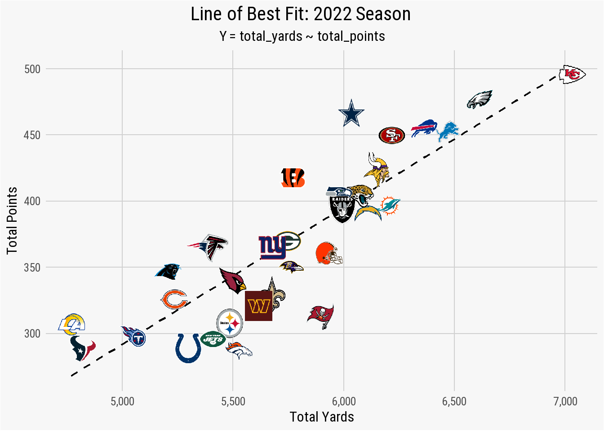
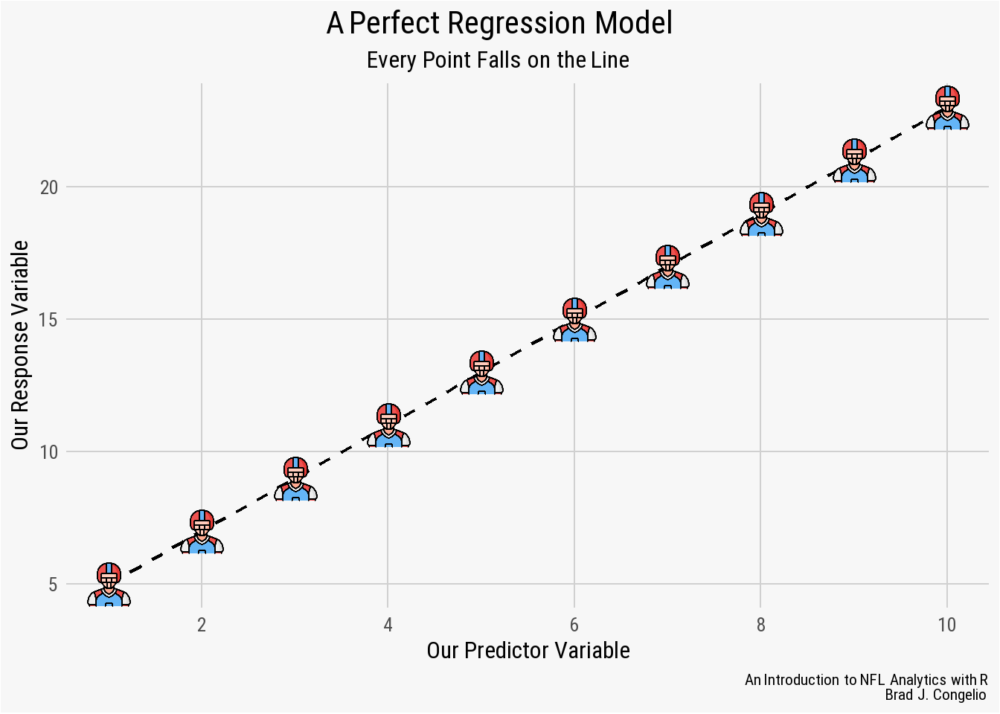
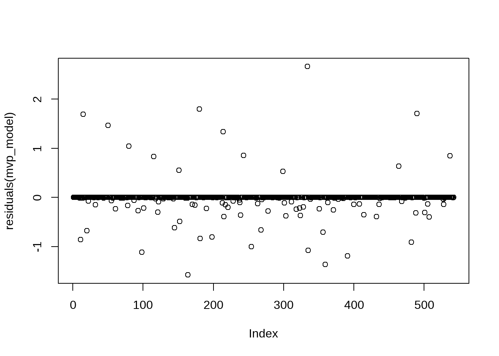
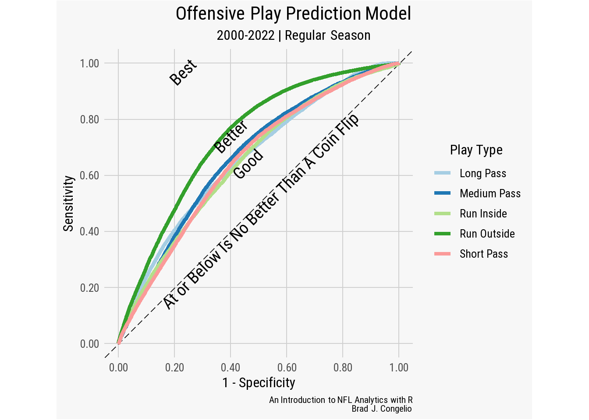
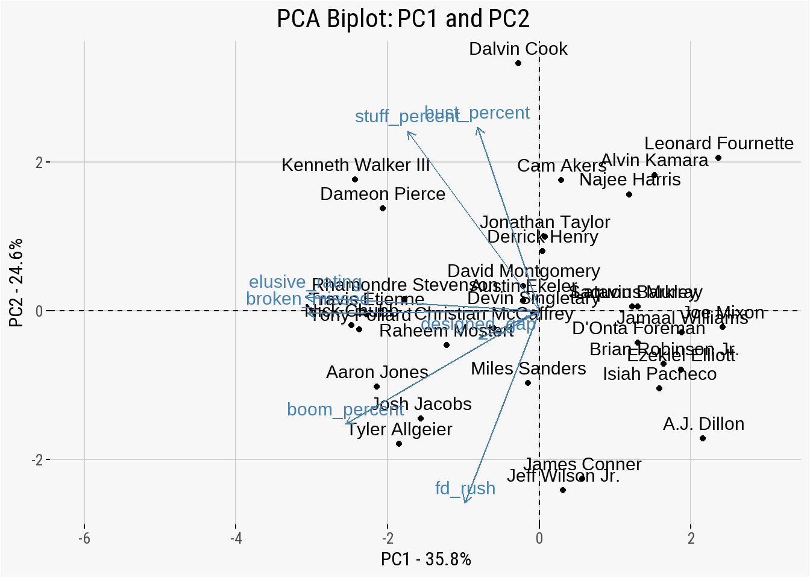
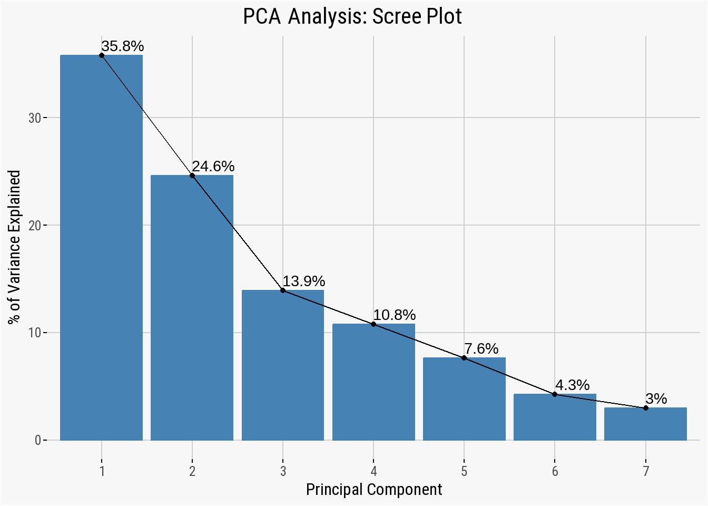
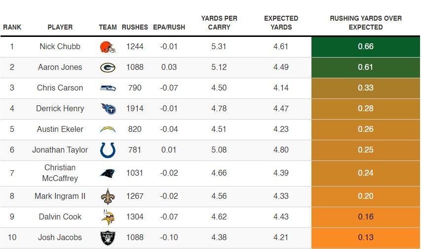
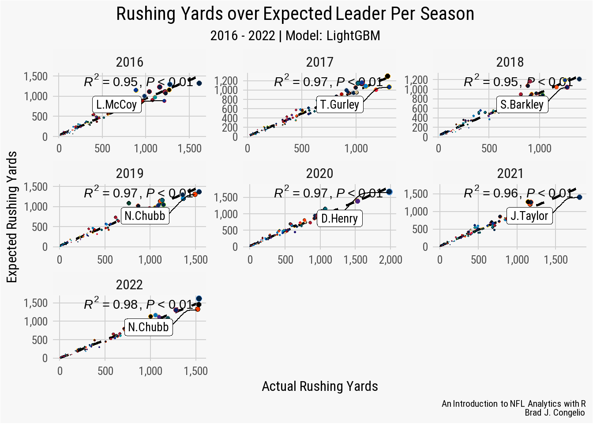
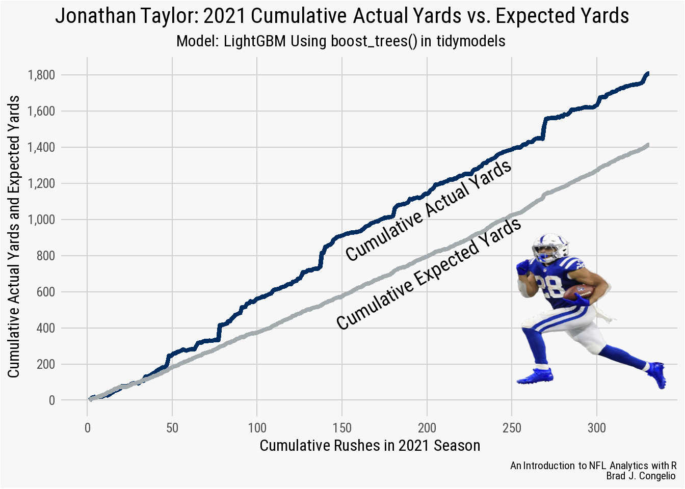

simple_regression_data <- vroom("http://nfl-book.bradcongelio.com/simple-reg")5 Advanced Model Creation with NFL Data
5.1 Introduction to Statistical Modeling with NFL Data
The process of conducting statistical modeling with NFL data is difficult to cover in a single chapter of a book, as the topic realistically deserves an entire book as the field of modeling and machine learning is vast and complex, and continues to grow as a result of access to new data and the releases of packages (as of November 2020, over 16,000 packages are available in the R ecosystem).(Wikipedia, 2023) The list of options for conducting statistical analysis and machine learning is vast, with the more widely-used ones including caret (combined functions for creating predictive models), mgcv (for generalized additive models), lme4 (for linear mixed effects models), randomForest (for creating random forests models), torch (for image recognition, time series forecasting, and audio processing), and glmnet (for lasso and elastic-net regression methods). A newer addition to the modeling and machine learning ecosystem is tidymodels, which is a collection of various packages that operate cohesively using tidyverse principles.
While it is not possible for this chapter to cover every aspect of modeling and machine learning, its goal is to provide the foundation in both to provide you with the necessary skills, understanding, and knowledge to independently explore and analyze NFL data using different methodologies and tools. The techniques covered in this chapter, from creating a simple linear regression to a predictive XGBoost model, are building blocks to all further analysis and machine learning you will conduct. In doing so, you will learn how to use built-in options such as stats to more technical packages such as tidymodels.
To that end, by mastering these introductory concepts and techniques, you not only learn the process and coding needed to create models or do machine learning, but you will begin developing an analytical mindset which will allow you to understand why one statistical approach is not correct for your data and which one is, how to interpret the results of your model, and - when necessary - how to correct issues and problems in the process as they arise. The fundamentals provided in this chapter, I believe, serve as a actionable stepping stone for a further journey into the modeling and machine learning in the R programming language, with or without the use of NFL data.
5.2 Regression Models with NFL Data
Regression models are the bedrock of many more advanced machine learning techniques. For example, the “decision tree” process that is conducted in random forests models and XGBoost are created based on the split in variable relationships and neural networks are, at their core, just a intricate web of regression-like calculations. Because of this, regression models are an outstanding starting point for not only learning the basics of modeling and machine learning in R, but an important step in comprehending more advanced modeling techniques.
As you will see, a regression model is simply a mathematical determination of the relationship between two or more variables (the response and dependent variables). In the context of the NFL, a team’s average points per game would be a response variable while those metrics that cause the average points per game are the predictor variables (average passing and rushing yards, turnovers, defensive yards allowed, etc.). The results of regression models allow us to determine which predictor variables have the largest impact on the response variable. Are passing yards a more predictive variable to average points per game than rushing yards? A regression model is capable of answering that question.
This section starts with exploring simple linear regression and then extends this knowledge to creating both multiple linear and logistic regression models which deal, respectively, with multiple predictors and categorical dependent variables. After, we will focus on creating binary and multinomial regression models.
5.2.1 Simple Linear Regression
A linear regression is a fundamental statistical technique that is used to explore the relationship between two variables - the dependent variable (also called the “response variable”) and the independent variables (also called the “predictor variables”). By using a simple linear regression, we can model the relationship between the two variables as a linear equation that best fits the observed data points.
A simple linear regression aims to fit a straight line through all the observed data points in such a way that the total squared distance between the actual observations and the values predicted by the model are minimal. This line is often referred to as either the “line of best fit” or the “regression line” and it represents the interaction between the dependent and independent variables. Mathematically, the equation for a simple linear regression is as follows:
\[ Y = {\beta}_0 + {\beta}_1 X + \epsilon \]
- \(Y\), in the above equation, is the dependent variable where the \(X\) represents the independent variable.
- \({\beta}_o\) is the intercept of the regression model.
- \({\beta}_1\) is the slope of the model’s “line of best fit.”
- \(\epsilon\) represents the error term.
To better illustrate this, let’s use basic football terms using the above regression equation to compare a team’s offensive points scored in a season based on how many offensive yards it accumulated. The intercept (\({\beta}_o\)) represents the value when a team’s points scored and offensive yards are both zero. The slope (\({\beta}_1\)) represents the rate of change in \(Y\) as the unit of \(X\) changes. The error term (\(\epsilon\)) is represents the difference between the actual observed values of the regression’s dependent variable and the value as predicted by the model.
Using our points scored/total yards example, a team’s total yards gained is the independent variable and total points scored is the dependent variable, as a team’s total yardage is what drives the change in total points (in other words, a team’s total points is dependent on its total yardage). A team will not score points in the NFL if it is not also gaining yardage. We can view this relationship by building a simple linear regression model in R using the lm() function.
Note
The lm() function is a built-in RStudio tool as part of the stats package and stand for “linear model.” It is used, as described above, to fit a linear regression to the data that you provide. The completed regression estimates the coefficients of the data and also includes both the intercept and slope, which are the main factors in explaining the relationship between the response and predictor variables.
The lm() function requires just two argument in order to provide results: the formula and the data frame to use:
model_results <- lm(formula, data)
The formula argument requires that you specify both the response and predictor variables, as named in your data frame, in the structure of y ~ x wherein y is the response variable and x is the predictor. In the case that you have more than one predictor variable, the + is used to add to the formula:
model_results <- lm(y ~ x1 + x2 + x3, data)
The returned coefficients, residuals, and other statistical results of the model are returned into your RStudio environment in a lm data object. There are several ways to access this data and are discussed below in further detail.
To put theory into action, let’s build a simple linear regression model that explores the relationship between the total yardage earned by a team over the course of a season and the number of points scored. To begin, gather the prepared information into a data frame titled simple_regression_data by running the code below.
The data contains the total yardage and points scored for each NFL team between the 2012 and 2022 seasons (not including the playoffs). Before running our first linear regression, let’s first begin by selecting just the 2022 data and create a basic visualization to examine the baseline relationship between the two variables.
regression_2022 <- simple_regression_data %>%
filter(season == 2022)
teams <- nflreadr::load_teams(current = TRUE)
regression_2022 <- regression_2022 %>%
left_join(teams, by = c("team" = "team_abbr"))
ggplot(regression_2022, aes(x = total_yards, y = total_points)) +
geom_smooth(method = "lm", se = FALSE,
color = "black",
linetype = "dashed",
size = .8) +
geom_image(aes(image = team_logo_wikipedia), asp = 16/9) +
scale_x_continuous(breaks = scales::pretty_breaks(),
labels = scales::comma_format()) +
scale_y_continuous(breaks = scales::pretty_breaks()) +
labs(title = "**Line of Best Fit: 2022 Season**",
subtitle = "*Y = total_yards ~ total_points*") +
xlab("Total Yards") +
ylab("Total Points") +
nfl_analytics_theme()
The plot shows that a regression between total_yards and total_points results in several teams - the Titans, Giants, Packers, Raiders, Jaguars, and Chiefs - being fitted nearly perfectly with the line of best fit. These teams scored points based on total yards in a linear fashion. The Cowboys, however, are well above the regression line. This indicates that Dallas scored more total points than what the relationship between total_yards and total_points found as “normal” for a team that earned just a hair over 6,000 total yards. The opposite is true for the Colts, Jets, and Denver. In each case, the total_points scored is below what is expected for teams that gained approximately 5,500 total yards.
The line of best fit can explain this relationship in slightly more detail. For example, the total_yards value of 5,500 cross the regression line just below the total_points value of 350. This means that a team that gains a total of 5,500 yards should - based on this fit - score just under 350 points during the season. Viewing it the other way, if you want your team to score 450 points during the upcoming season, you will need the offensive unit to gain roughly 6,500 total yards.
To further examine this relationship, we can pass the data into a simple linear regression model to start exploring the summary statistics.
results_2022 <- lm(total_points ~ total_yards,
data = regression_2022)Using the lm() function, the \(Y\) variable (the dependent) is total_yards and the \(X\) variable (the predictor) is entered as total_yards with the argument that the data is coming from the regression_2022 data frame. We can view the results of the regression model by using the summary() function.
summary(results_2022)
Call:
lm(formula = total_points ~ total_yards, data = regression_2022)
Residuals:
Min 1Q Median 3Q Max
-71.44 -22.33 1.16 19.15 68.08
Coefficients:
Estimate Std. Error t value Pr(>|t|)
(Intercept) -225.0352 65.4493 -3.44 0.0017 **
total_yards 0.1034 0.0113 9.14 3.6e-10 ***
---
Signif. codes: 0 '***' 0.001 '**' 0.01 '*' 0.05 '.' 0.1 ' ' 1
Residual standard error: 32 on 30 degrees of freedom
Multiple R-squared: 0.736, Adjusted R-squared: 0.727
F-statistic: 83.5 on 1 and 30 DF, p-value: 3.6e-10
Reading & Understanding Regression Results
You have now run and output the summary statistics for your first linear regression model that explore the relationship between an NFL team’s total yards and total points over the course of the 2022 season.
But what do they mean?
The summary() output of any regression models contains two core components: the residuals and the coefficients.
Residuals
A model’s residuals are the calculated difference between the actual values of the predictor variables as found in the data and the values predicted by the regression model. In a perfect uniform relationship, all of the values in the data frame would sit perfectly on the line of best fit. Take the below graph, for example.
example_fit <- tibble(
x = 1:10,
y = 2 * x + 3)
example_perfect_fit <- lm(y ~ x, data = example_fit)
ggplot(example_perfect_fit, aes(x = x, y = y)) +
geom_smooth(method = "lm", se = FALSE, color = "black",
size = .8, linetype = "dashed") +
geom_image(image = "./images/football-tip.png", asp = 16/9) +
scale_x_continuous(breaks = scales::pretty_breaks()) +
scale_y_continuous(breaks = scales::pretty_breaks()) +
labs(title = "A Perfect Regression Model",
subtitle = "Every Point Falls on the Line",
caption = "*An Introduction to NFL Analytics with R*<br>
**Brad J. Congelio**") +
xlab("Our Predictor Variable") +
ylab("Our Response Variable") +
nfl_analytics_theme()
In this example, the regression model was able to successfully “capture” the entirety of the relationship between the predictor variable on the x-axis and the response variable on the y-axis. This means that the model leaves no unexplained or undetermined variance between the variables. As a result, we could provide the model new, unseen data and the result would predict - with 100% accuracy - the resulting values of the response variable.
However, it is rare to have real-world data be perfectly situated on the line of best fit. In fact, it is more often than not a sign of “overfitting,” which occurs when the model successfully discovers the “random noise” in the data. In such cases, a model with a “perfect line of fit” will perform incredibly poorly when introduced to unseen data.
A regression model that is not overfitted will have data points that do not fall on the line of best fit, but fall over and under it. The results of the regression model uses a simple formula to help us interpret the difference between those actual and estimated values:
residuals = observed_value - predicted_value
Information about these residual values are included first in our summary(results_2022) output and provide insight into the distribution of the model’s residual errors.
| Summary Distribution | Meaning |
The Min Distribution |
The Min distribution provides the smallest difference between the actual values of the model’s predictor variable (total points) and the predicted. In the example summary, the minimum residual is -71.443 which means that the lm() model predicted that one specific team scored 71.443 more points than it actually did. |
The 1Q Distribution |
The 1Q distribution is based on the first quartile of the data (or where the first 25% of the model’s residual fall on the line of best fit). The 1Q residual is -22.334, which means the lm() model predicted that 25% of the teams scored 22.334 more points than the actual values. |
The Median Distribution |
The Median distribution is the residuals from the 50th percentile of the data. The Median residual in the above summary is 1.157, which means that the lm() model - for 50% of teams - either overestimated or underestimated a teams total points by less than 1.157 points. |
The 3Q Distribution |
Covering the third quartile of the residuals, the 3Q Distribution is 19.145 which means that 75% of the NFL teams in the data had a total points prediction either overestimated or underestimated by less than 19.145 points. |
The Max Distribution |
The opposite of the Min distribution, the Max distribution is the largest difference between the model’s observed and predicted values for a team’s total points. In this case, for one specific team, the model predicted the team scored 68.080 points less than the actual value. |
A model’s residuals allow you to quickly get a broad view of accurately it is predicting the data. Ideally, a well-performing model will return residuals that are small and distributed evenly around zero. In such cases, it is good first sign that the predictions are close to the actual value in the data and the model is not producing over or under estimates.
But that is not always the case.
For example, we can compare our above example residuals to the residuals produced by manually created data.
Min. 1st Qu. Median Mean 3rd Qu. Max.
-13.70 -2.18 -0.60 0.00 4.16 10.54 Compared to the residuals from the above NFL data, the residuals from the randomly created data are small in comparison and are more evenly distributed around zero. Given that, it is likely that the linear model is doing a good job at making predictions that are close to the actual value.
But that does not mean the residuals from the NFL data indicate a flawed and unreliable model.
It needs to be noted that the “goodness” of any specific linear regression model is wholly dependent on both the context and the specific problem that the model is attempting to predict. To that end, it is also a matter of trusting your subject matter expertise on matters regarding the NFL.
There could be any number of reasons that can explain why the residuals from the regression model are large and not evenly distributed from zero. For example:
Red-zone efficiency: a team that moves the ball downfield with ease, but then struggles to score points once inside the 20-yardline , will accumulate
total_yardsbut fail to producetotal_pointsin the way the model predicts.Turnovers: Similar to above, a team may rack up
total_yardsbut ultimately continue to turn the ball over prior to being able to score.Defensive scoring: a score by a team’s defense, in this model, still counts towards
total_pointsbut does not count towardstotal_yards.Strength of Opponent: At the end of the 2022 season, the Philadelphia Eagles and the New York Jets both allowed just 4.8 yards per play. The model’s predicted values of the other three teams in each respective division (NFC East and AFC East) could be incorrect because such contextual information is not included in the model.
All that to say: residuals are a first glance at the results of the data and provide a broad generalization of how the model performed without taking outside contextual factors into consideration.
Coefficients
The coefficients of the model are the weights assigned to each predictor variable and provide insight into the relationship between the various predictor and response variables, with the provided table outlining the statistical metrics.
- Estimate - representing the actual coefficient of the model, these numbers are the mathematical relationship between the predictor and response variables. In our case, the estimate for
total_yardsis 0.1034 which means that for each additional one yard gained we can expected a team’stotal_pointsto increase by approximately 0.1034. - Std. Error - the standard error is the numeric value for the level of uncertainty in the model’s estimate. In general, a lower standard error indicates a more reliable estimate. In other words, if we were to resample the data and then run the regression model again, we could expect the
total_yardscoefficient to vary by approximately 0.0113, on average, for each re-fitting of the model. - t value - The t-statistic value is the measure of how many standard deviations the estimate is from 0. A larger t-value indicates that it is less likely that the model’s coefficient is not equal to 0 by chance.
- Pr(>|t|) - This value is the p-value associated with the hypothesis test for the coefficient. The level of significance for a statistical model is typically 0.05, meaning a value less than this results in a rejection of the null hypothesis and the conclusion that the predictor does have a statistically significant relationship with the response variable. In the case of our regression model, a p-value of 0.00000000036 indicates a highly significant relationship.
Returning to the summary statistics of our analysis of the 2022 season, the residuals have a wide spread and an inconsistent deviation from zero. While the median residual value is the closest to zero at 1.157, it is still a bit too high to safely conclude that the model is making predictions that adequately reflect the actual values. Moreover, both tail ends of the residual values (Min and Max) are a large negative and positive number, respectively, which is a possible indication that the regression model is both over- and underestimating a team’s total_points by statistically significant amount.
However, as mentioned, this widespread deviation from zero is likely the result of numerous factors outside the model’s purview that occur in any one NFL game. To get a better idea of what the residual values represent, we can plot the data and include NFL team logos.
regression_2022$residuals <- residuals(results_2022)
ggplot(regression_2022, aes(x = total_yards, y = residuals)) +
geom_hline(yintercept = 0, color = "black", linewidth = .7) +
stat_fit_residuals(size = 0.01) +
stat_fit_deviations(size = 1.75, color = regression_2022$team_color) +
geom_image(aes(image = team_logo_wikipedia), asp = 16/9, size = .0325) +
scale_x_continuous(breaks = scales::pretty_breaks(),
labels = scales::comma_format()) +
scale_y_continuous(breaks = scales::pretty_breaks(n = 5)) +
labs(title = "**Total Yards & Residual Values**",
subtitle = "*Y = total_points ~ total_yards*",
caption = "*An Introduction to NFL Analytics with R*<br>
**Brad J. Congelio**") +
xlab("Total Yards") +
ylab("Residual of Total Points") +
nfl_analytics_theme() +
theme(panel.grid.minor.y = element_line(color = "#d0d0d0"))
With the data visualized, it is clear that the model’s Min distribution of -71.44 is associated with the Tampa Bay Buccaneers, while the Max distribution of 68.08 is the prediction for the total points earned by the Dallas Cowboys. Because a negative residual means that the model’s predicted value is too high, and a positive residual means it was too low, we can conclude that the Buccaneers actually scored 71.4 points less than the the results of the model, while the Cowboys scored 68.08 more than predicted.
`Coefficients:
Estimate Std. Error t value Pr(>|t|)
(Intercept) -225.0352 65.4493 -3.44 0.0017 **
total_yards 0.1034 0.0113 9.14 0.00000000036 ***
---
Signif. codes: 0 ‘***’ 0.001 ‘**’ 0.01 ‘*’ 0.05 ‘.’ 0.1 ‘ ’ 1`The (Intercept) of the model, or where the regression line crosses the y-axis, is -225.0350. When working with NFL data, it of course does not make sense that the (Intercept) is negative. Given the model is built on a team’s total yards and total points, it seems intuitive that the regression line would cross the y-axis at the point of (0,0) as an NFL team not gaining any yards is highly unlike to score any points.
It is important to remember that the linear model attempts to position the regression line to come as close to all the individual points as possible. Because of this, it is not uncommon for regression line to not cross exactly where the x-axis and y-axis meet. Again, contextual factors of an NFL game are not accounted for in the model’s data: strength of the opponent’s defense, the quality of special teams play, defensive turnovers and/or touchdowns, field position, etc. can all impact a team’s ability to score points without gaining any yardage. The lack of this information in the data ultimately impacts the positioning of the line of best fit.
The total_yards coefficient represents the slope of the model’s regression line. It is this slope that represents how a team’s total points are predicted to change with every additional gain of one yard. In this example, the total_yards coefficient is 0.10341 - so for every additional yard gained by a team, it is expected to add 0.10341 points to the team’s cumulative amount.
The Std. Error summary statistic provides guidance on the accuracy of the other estimated coefficients. The Std. Error for the model’s (Intercept) is quite large at 65.44927. Given the ability to resample the data from NFL terms numerous times and then allowing the linear model to predict again, this specific Std. Error argues that the regression line will cross the y-axis within 65.44972 of -225.03520 in either direction. Under normal circumstances, a large Std. Error for the (Intercept) would cause concern about the validity of the regression line’s crossing point. However, given the nature of this data - an NFL team cannot score negative points - we should not have any significant concern about the large Std. Error summary statistic for the (Intercept).
At 0.01132, the Std. Error for the total_yards coefficient is small and indicates that the Estimate of total_yards - that is, the increase in points per every yard gained - is quite accurate. Given repeated re-estimating of the data, the relationship between total_yards and total_points would vary by just 0.01132, either positively or negatively.
With a t-value of 9.135, the total_yards coefficient has a significant relationship with total_points. The value of -3.438 indicates that the (Intercept) is statistically different from 0 but we should still largely ignore this relationship given the nature of the data.
The model’s Pr(>|t|) value of highly significant for total_yards and is still quite strong for the (Intercept). The value of 0.00000000036 indicates an incredibly significant relationship between total_yards and total_points.
The linear model’s Residual Standard Error is 32.04, which means that the average predicted values of total_points are 32.04 points different from the actual values in the data. The linear model was able to explain 73.56% of the variance between total_yards and total_points based on the multiple R-squared value of 0.7356. Additionally, the Adjusted R-squared value of 0.7268 is nearly identical to the multiple R2, which is a sign that the linear model is not overfitting (in this case because of the simplicity of the data). The model’s F-Statistic of 83.45 indicates a overall significance to the data, which is backed up by an extremely strong p-value.
Based on the summary statistics, the linear model did an extremely good job at capturing the relationship between a team’s total_yards and total_points. However, with residuals ranging from -71.443 to 68.080, it is likely that the model can be improved upon by adding additional information and statistics. However, before providing additional metrics, we can try to improve the model’s predictions by including all of the data (rather than just the 2022 season). By including 20-seasons worth of total_yards and total_points, we are increasing the sample size which, in theory, allows for a reduced impact of any outliers and an improve generalizability.
Important
Working with 10+ years of play-by-play data can be problematic in that the model, using just total_yards and total_points, is not aware of changes in the overall style of play NFL. The balance between rushing and passing has shifted, there’s been a philosophical shift in the coaching ranks in “going for it” on 4th down, etc. A simple linear regression cannot account for how these shifts impact the data on a season-by-season basis.
The results from including the total_points and total_yards for each NFL team from 2012-2022 show an improvement of the model, specifically with the residual values.
regression_all_seasons <- simple_regression_data %>%
select(-season)
all_season_results <- lm(total_points ~ total_yards,
data = regression_all_seasons)
summary(all_season_results)The residual values after including 20-seasons worth of data are a bit better. The Median is -1.26 which is slightly higher than just one season (M = 1.16). The 1Q and 3Q distributions are both approximately symmetric around the model’s M value compared to just the 2022 season regression that results in a deviation between 1Q and 3Q (-22.33 and 19.15, respectively). The Min and Max values of the new model still indicate longtail cases on both ends of the regression line much like the 2022 model found.
Tip
To further examine the residual values, we can use a Shapiro-Wilk Test to test the whether results are normally distributed.
The Shapiro-Wilk Test provides two values with the output: the test statistic (provided as a W score) and the model’s p-value. Scores for W can range between 0 and 1, where results closer to 1 mean the residuals are in a normal distribution. The p-value is used make a decision on the null hypothesis (that there is enough evidence to conclude that there is uneven distribution). In most cases, if the p-value is larger than the regression’s level of significance (typically 0.05), than you may reject the null hypothesis.
We can run the Shapiro-Wilk Test on our 2012-2022 data using the shapiro.test function that is part of the stats package in R.
results_2012_2020 <- residuals(all_season_results)
shapiro_test_result <- shapiro.test(results_2012_2020)
shapiro_test_result
Shapiro-Wilk normality test
data: results_2012_2020
W = 1, p-value = 0.8The W score for the residual is 1, meaning a very strong indication that the data in our model is part of a normal distribution. The p-value is 0.8, which is much larger than the regression’s level of significance (0.05). As a result, we can reject the null hypothesis and again conclude that the data is in a normal distribution.
teams <- nflreadr::load_teams(current = TRUE)
regression_all_seasons <- left_join(regression_all_seasons,
teams, by = c("team" = "team_abbr"))
regression_all_seasons$residuals <- residuals(all_season_results)
ggplot(regression_all_seasons, aes(x = total_yards, y = residuals)) +
geom_hline(yintercept = 0,
color = "black", linewidth = .7) +
stat_fit_residuals(size = 2,
color = regression_all_seasons$team_color) +
stat_fit_deviations(size = 1,
color = regression_all_seasons$team_color, alpha = 0.5) +
scale_x_continuous(breaks = scales::pretty_breaks(),
labels = scales::comma_format()) +
scale_y_continuous(breaks = scales::pretty_breaks(n = 5)) +
labs(title = "**Total Yards & Residual Values: 2012-2022**",
subtitle = "*Y = total_points ~ total_yards*",
caption = "*An Introduction to NFL Analytics with R*<br>
**Brad J. Congelio**") +
xlab("Total Yards") +
ylab("Residual of Total Points") +
nfl_analytics_theme() +
theme(panel.grid.minor.y = element_line(color = "#d0d0d0"))
We can also compare the multiple R2 and adjusted R2 score between the two regression models.
2012 - 2022 Data:
Multiple R-squared: 0.683
Adjusted R-squared: 0.682
2022 Data
Multiple R-squared: 0.736
Adjusted R-squared: 0.727The regression using just the 2022 data results in a slightly better multiple and adjusted R2 score compared to using data from the last twenty seasons of the NFL. While this does indicate that the model based on the single season is better at defining the relationship between a team’s total_yards and total_points it is essential to remember that there is different underlying patterns in the data as a result of the changing culture in the NFL and, ultimately, the epp and flow of team performance as a result of high levels of parity in the league.
In order to account for this “epp and flow” in both team performance and the changing culture/rules of the NFL, we need to turn to a multiple linear regression in order to include these additional factors as it is a model that is capable of better accounting for the nuances of NFL data.
5.2.2 Multiple Linear Regression
A multiple linear regression is extremely similar to a simple linear regression (both in design and implementation in RStudio).The main difference is that a multiple linear regression allows for us to include additional predictor variables by using the + sign in the model’s formula. The inclusion of these additional predictive variables, in theory, allows the model to compute more complex relationships in NFL data and improve on the model’s final performance.
We will again create our first multiple regression linear regression with data from just the 2022 regular season that includes the same predictor (total_yards) and response variable (total_points). For additional predictors, we must consider what circumstances may lead a team to have high total_yards but an amount of total_points that would fall below the model’s predicted value. We will include the following as additional predictors:
- Redzone Efficiency: provided as a percentage, this is a calculation of how many times a team drove into the redzone and scored. A higher percentage is better.
- Redzone Touchdown Efficiency: This is the same as redzone efficiency, but includes only the number of redzone trips divided by the total touchdowns scored from the redzone.
- Redzone Field Goal Efficiency: The same as redzone touchdown efficiency, but with field goals.
- Cumulative Turnovers: The total number of turnovers during the regular season.
- Defensive Touchdowns: The number of touchdowns scored by each team’s defensive unit.
- Special Teams Touchdowns: The number of touchdowns scored by special teams (kick/punt returns).
To begin building the multiple linear regression model for the 2022 season, we can read in the data below using vroom::vroom().
multiple_lm_data <- vroom("http://nfl-book.bradcongelio.com/multiple-lm")
multiple_lm_data <- multiple_lm_data %>%
filter(season == 2022)
teams <- multiple_lm_data$teamThe data for our multiple linear regression has the same four columns as the simple linear regression (season, team, total_points, and total_yards) but also includes the new predictor variables (rz_eff, rz_td_eff, rz_fg_eff, def_td, and spec_tds).
Caution
Please note that, of the predictor and response variables, all of the values are in whole number format except for rz_eff, rz_td_eff, and rz_fg_eff. While it is not a problem to include predictors that are on differing scales (in this case, whole numbers and percentages), it may cause difficulty in interpreting the summary statistics. If this is the case, the issue can be resolved by using the scale() function to standardize all the predictors against one another.
The construction of the multiple linear regression model is the same process of the simple regression, with the inclusion of additional predictors to the formula using the + sign. We are also applying a filter() to our multiple_lm_data to retrieve just the 2022 season.
lm_multiple_2022 <- lm(total_points ~ total_yards + rz_eff + rz_td_eff + rz_fg_eff
+ total_to + def_td + spec_tds, data = multiple_lm_data)
summary(lm_multiple_2022)
Call:
lm(formula = total_points ~ total_yards + rz_eff + rz_td_eff +
rz_fg_eff + total_to + def_td + spec_tds, data = multiple_lm_data)
Residuals:
Min 1Q Median 3Q Max
-53.03 -15.58 -0.35 14.60 43.53
Coefficients: (1 not defined because of singularities)
Estimate Std. Error t value Pr(>|t|)
(Intercept) -459.5225 128.5557 -3.57 0.0015 **
total_yards 0.0906 0.0113 8.02 2.2e-08 ***
rz_eff 228.8853 113.5625 2.02 0.0547 .
rz_td_eff 167.2323 82.7097 2.02 0.0540 .
rz_fg_eff NA NA NA NA
total_to 0.4058 1.4934 0.27 0.7881
def_td 4.4560 4.0573 1.10 0.2826
spec_tds 5.4977 7.8674 0.70 0.4911
---
Signif. codes: 0 '***' 0.001 '**' 0.01 '*' 0.05 '.' 0.1 ' ' 1
Residual standard error: 26.9 on 25 degrees of freedom
Multiple R-squared: 0.844, Adjusted R-squared: 0.807
F-statistic: 22.6 on 6 and 25 DF, p-value: 5.81e-09The summary statistic residuals for the multiple linear regression are more evenly distributed towards the mean than our simple linear regression. Based on the residuals, we can conclude that - for 50% of the teams - the model either over or underestimated their total_points by just -0.35 (as listed in the Median residual). The interquartile range (within the 1Q and 3Q quartiles) are both close to the median and the Min and Max residuals both decreased significantly from our simple linear model, indicating a overall better line of fit.
We can confirm that the multiple linear regression resulted in an even distribution of the residuals by again using a Shapiro-Wilk Test.
Shapiro-Wilk normality test
data: results_lm_2022
W = 1, p-value = 0.9The results of the Shapiro-Wilk test (W = 1 and p-value = 0.9) confirm that residuals are indeed evenly distributed. A visualization showcases the model’s even distribution of the residuals.
mlm_2022_fitted <- predict(lm_multiple_2022)
mlm_2022_residuals <- residuals(lm_multiple_2022)
plot_data_2022 <- data.frame(Fitted = mlm_2022_fitted,
Residuals = mlm_2022_residuals)
plot_data_2022 <- plot_data_2022 %>%
cbind(teams)
nfl_teams <- nflreadr::load_teams(current = TRUE)
plot_data_2022 <- plot_data_2022 %>%
left_join(nfl_teams, by = c("teams" = "team_abbr"))
ggplot(plot_data_2022, aes(x = Fitted, y = Residuals)) +
geom_hline(yintercept = 0,
color = "black", linewidth = .7) +
stat_fit_deviations(size = 1.75,
color = plot_data_2022$team_color) +
geom_image(aes(image = team_logo_espn),
asp = 16/9, size = .0325) +
scale_x_continuous(breaks = scales::pretty_breaks(),
labels = scales::comma_format()) +
scale_y_continuous(breaks = scales::pretty_breaks()) +
labs(title = "**Multiple Linear Regression Model: 2022**") +
xlab("Fitted Values") +
ylab("Residual Values") +
nfl_analytics_theme() +
theme(panel.grid.minor.y = element_line(color = "#d0d0d0"))
Just as the residual values in the summary statistics indicated, plotting the fitted_values against the residual_values shows an acceptable spread in the distribution, especially given the nature of NFL data. Despite positive results in the residual values, the summary statistics of the multiple linear regression indicates a significant issue with the data. Within the Coefficients, it is explained that one of the items is “not defined because of singularities.”
Important
“Singularities” occur in the data as a result of the dreaded multicollinearity between two or more predictors. The involved predictors were found to have a high amount of correlation between one another, meaning that one of the variables can be predicted in a near linear fashion with one or more of the other predictive variables. As a result, it is difficult for the regression model to correctly estimate the contribution of these dependent variables to the response variable.
The model’s Coefficients of our multiple linear regression shows NA values for the rz_fg_eff predictor (the percentage of times a team made a field goal in the red zone rather than a touchdown). This is because rz_fg_eff was one of the predictive variables strongly correlated and was the one dropped by the regression model to avoid producing flawed statistics as a result of the multicollinearity.
If you are comfortable producing the linear regression with rz_fg_eff being a dropped predictor, there are no issues with that. However, we can create a correlation plot that allows is to determine which predictors have high correlation values with others. Examining the issue allows us to determine if rz_fg_eff is, indeed, the predictive variable we want the regression to drop or if we’d rather, for example, drop rz_eff and keep just the split between touchdowns and field goals.
regression_corr <-
cor(multiple_lm_data[, c("total_yards",
"rz_eff", "rz_td_eff",
"rz_fg_eff", "total_to",
"def_td", "spec_tds")])
melted_regression_corr <- melt(regression_corr)
ggplot(data = melted_regression_corr, aes(x = Var1,
y = Var2,
fill = value)) +
geom_tile() +
scale_fill_distiller(palette = "PuBu",
direction = -1,
limits = c(-1, +1)) +
geom_text(aes(x = Var1, y = Var2, label = round(value, 2)),
color = "black",
fontface = "bold",
family = "Roboto", size = 5) +
labs(title = "Multicollinearity Correlation Matrix",
subtitle = "Multiple Linear Regression: 2022 Data",
caption = "*An Introduction to NFL Analytics with R*<br>
**Brad J. Congelio**") +
nfl_analytics_theme() +
labs(fill = "Correlation \n Measure", x = "", y = "") +
theme(legend.background = element_rect(fill = "#F7F7F7"),
legend.key = element_rect(fill = "#F7F7F7"))
Using a correlation plot allows for easy identification of those predictive variables that have high correlation with one another. The general rule is that two predictors become problematic in the regression model if the coefficient between the two is above 0.7 (or 0.8, given domain knowledge about the context of the data).
In our correlation plot, there are two squares (indicated by the darkest blue color) that have a value greater than 0.7 (or -0.7 in this case, as both strong and negative correlations are capable of producing multicollinearity. The two squares happen to relate to the same relationship between the rz_fg_eff and rz_td_eff predictors.
Recall that the regression model automatically removed the rz_fg_eff from the measured Coefficients. Given the context of the data, I am not sure that is the best decision. Because we are examining the relationship between the predictive variables and total_points, removing the rz_fg_eff variable inherently erases a core source of points in a game of football.
Because of this - and since our rz_eff predictor accounts for both touchdowns and field goals - I believe we can move forward on rerunning the regression without bothrz_fg_eff and rz_td_eff.
To run the multiple linear regression again, without the predictors relating to red zone touchdown and field efficiency, we will drop both from our multiple_lm_2022 data frame, rerun the regression model, and then examine the ensuing summary statistics.
lm_multiple_2022_edit <- multiple_lm_data %>%
select(-rz_td_eff, -rz_fg_eff)
lm_multiple_2022_edit <- lm(total_points ~ total_yards + rz_eff +
total_to + def_td + spec_tds,
data = lm_multiple_2022_edit)
summary(lm_multiple_2022_edit)
Call:
lm(formula = total_points ~ total_yards + rz_eff + total_to +
def_td + spec_tds, data = lm_multiple_2022_edit)
Residuals:
Min 1Q Median 3Q Max
-60.18 -14.83 -3.79 18.99 55.92
Coefficients:
Estimate Std. Error t value Pr(>|t|)
(Intercept) -472.5877 135.8042 -3.48 0.0018 **
total_yards 0.0998 0.0109 9.13 1.4e-09 ***
rz_eff 309.1167 112.5462 2.75 0.0108 *
total_to -0.2760 1.5388 -0.18 0.8591
def_td 3.5808 4.2670 0.84 0.4090
spec_tds 4.9584 8.3167 0.60 0.5562
---
Signif. codes: 0 '***' 0.001 '**' 0.01 '*' 0.05 '.' 0.1 ' ' 1
Residual standard error: 28.5 on 26 degrees of freedom
Multiple R-squared: 0.819, Adjusted R-squared: 0.784
F-statistic: 23.5 on 5 and 26 DF, p-value: 7.03e-09We have certainly simplified the model by removing both rz_td_eff and rz_fg_eff but the impact of this change is a fair trade off to avoid further issues with multicollinearity. Our new adjusted R is still high (0.784), only dropping a bit from the original model that included both predictors (0.807). Both models did well at explaining the amount of variance between the predictors and the response variable. While the F-statistic and the p-value are strong in both models, it is important to note that the Residual standard error dropped from 27 in the original model to 28 in the more simplified version. Given that this value is the average difference between the actual values and the predicted equivalents in the regression, both would ideally be smaller.
With multiple linear regression model producing acceptable results over the course of the 2022 season, we can now see if the results remain stable when produced over the course of the 2012-2022 seasons.
multiple_lm_data_all <- multiple_lm_data %>%
select(-rz_td_eff, -rz_fg_eff, -season)
lm_multiple_all <- lm(total_points ~ total_yards + rz_eff +
total_to + def_td + spec_tds,
data = multiple_lm_data_all)
summary(lm_multiple_all)
Call:
lm(formula = total_points ~ total_yards + rz_eff + total_to +
def_td + spec_tds, data = multiple_lm_data_all)
Residuals:
Min 1Q Median 3Q Max
-60.18 -14.83 -3.79 18.99 55.92
Coefficients:
Estimate Std. Error t value Pr(>|t|)
(Intercept) -472.5877 135.8042 -3.48 0.0018 **
total_yards 0.0998 0.0109 9.13 1.4e-09 ***
rz_eff 309.1167 112.5462 2.75 0.0108 *
total_to -0.2760 1.5388 -0.18 0.8591
def_td 3.5808 4.2670 0.84 0.4090
spec_tds 4.9584 8.3167 0.60 0.5562
---
Signif. codes: 0 '***' 0.001 '**' 0.01 '*' 0.05 '.' 0.1 ' ' 1
Residual standard error: 28.5 on 26 degrees of freedom
Multiple R-squared: 0.819, Adjusted R-squared: 0.784
F-statistic: 23.5 on 5 and 26 DF, p-value: 7.03e-09The results of the multiple linear regression over data from the 2012-2022 indicates a statistically significant relationship between our predictor variables and a team’s total yards. That said, two items are worth further exploration.
- The model’s Residual standard error increased closer to 30, as opposed to the values of 27 and 28 from the models built on a single season of data. This means that the model, on average, is over or underpredicting the actual values by approximately thirty points. To verify that a residual standard error of 30 is not too high, we can evaluate the value against the scale of our data based on the mean and/or median averages of the
total_pointsvariable. As seen below, the model’s RSE as a percentage of the mean is8.1%and its percentage of the median is8.2%. Given that both values are below 10%, it is reasonable to conclude that the value of the model’s residual standard error is statistically small compared to the scale of thetotal_pointsdependent variable.
Tip
total_mean_points <- mean(multiple_lm_data_all$total_points)
total_points_median <- median(multiple_lm_data_all$total_points)
rse_mean_percentage <- (30 / total_mean_points) * 100
rse_median_percentage <- (30 / total_points_median) * 100- The
spec_tdspredictor, which is the total number of special teams touchdowns scored by a team, has ap-valueof 0.61. This high of ap-valueindicates that the amount of special teams touchdowns earned by a team is not a dependable predictor of the team’s total points. Given the rarity of kickoff and punt returns, it is not surprising that the predictor returned a highp-value. If we run the regression again, without thespec_tdspredictive variable, we get results that are nearly identical to the regression model that includes it as a predictor. The only significant difference is a decrease in theF-statisticfrom 398 to 317. Given the small decrease, we will keepspec_tdsin the model.
Important
The final step of our multiple linear regression model is feeding it new data to make predictions on.
To begin, we need to create a new data frame that holds the new predictor variables. For nothing more than fun, let’s grab the highest value from each predictive variable between the 2012-2022 seasons.
new_observations <- data.frame(
total_yards = max(multiple_lm_data$total_yards),
rz_eff = max(multiple_lm_data$rz_eff),
total_to = max(multiple_lm_data$total_to),
def_td = max(multiple_lm_data$def_td),
spec_tds = max(multiple_lm_data$spec_tds))This hypothetical team gained a total of 7,317 yards in one season and was incredibly efficient in the red zone, scoring 96% of the time. It also scored nine defensive touchdowns and returned a punt or a kickoff to the house four times. Unfortunately, the offense also turned the ball over a whopping total of 41 times.
We can now pass this information into our existing model using the predict function and it will output the predicted total_points earned by this hypothetical team based on the multiple linear regression model we built with 20 years of NFL data.
new_predictions <- predict(lm_multiple_all, newdata = new_observations)
new_predictionsThe model determined, based on the new predictor variables provided, that this hypothetical team will score a total of 563 points, which is the second-highest cumulative amount scored by a team dating back to the 2012 season (the 2013 Denver Broncos scored 606 total points). In this situation, the hypothetical team has nearly double the turnovers as the 2013 Bronco (41 turnovers to 21). It is reasonable that providing this hypothetical team a lower number of turnovers would result in it becoming the highest scoring team since 2012.
5.2.3 Logistic Regression
Logistic regressions are particularity useful when modeling the relationship between a categorical dependent variable and a given set of predictor variables. While linear models, as covered in the last section, handles data with a continuous dependent variable, logistic regressions are used when the response variable is categorical (whether a team successfully converted a third down, whether a pass was completed, whether a running back fumbled on the play, etc.). In each example, there are only two possible outcomes: “yes” or “no”.
Moreover, a logistic regression model does not model the relationship between the predictors and the response variables in a linear fashion. Instead, logistic regressions use seek to mutate the predictors into a values between 0 and 1. Specifically, the formula for a logistic regression is as follows:
\[ P(Y=1|X) = \frac{1}{1 + e^{-(\beta_0 + \beta_1X_1 + \beta_2X_2 + ... + \beta_nX_n)}} \]
- \(P(Y=1|X)\) in the equation is the likelihood of the event \(Y=1\) taking place given the provided predictor variables (\(X\)).
- The model’s coefficients are represented by \(\beta_0 + \beta_1X_1 + \beta_2\).
- \(X1, X2, ..., Xn\) represent the model’s predictor variables.
- The \(1\) in the formula’s numerator results in the model’s probability values always being between 0 and 1.
- The \(1\) in the denominator is a part of the underlying logistic function and ensures that the value is always greater than or equal to 1.
- Finally, the \(e\) is part of the model’s logarithm (or the constant of 2.71828). In short, this function allows the linear combination to be a positive value.
To better explain the formula, let’s assume we want to predict the probability of any one NFL team winning a game (again, in a binary 1 for winning, or 0 for losing). These binary outcome is represented by the \(Y\). The predictor variables, such as the team’s average points scored, the average points allowed by the opposing defense, home-field advantage, and any other statistics likely to be important in making the prediction are represented by \(X1, X2, ..., Xn\). The model’s coefficients, or the relationship between the predictors and a team’s chance of winning, are represented by \(\beta_0 + \beta_1X_1 + \beta_2\). In the event that a team’s average passing yards is represented by the \(B1\) coefficient, a positive number suggests that higher average passing yards results in an increase in the probability of winning. Conversely, a negative coefficient number indicates the statistic has a negative impact on winning probability.
To that end, there are three distinct types of logistic regressions: binary, multinomial, and ordinal (we will only be covering binary and multinomial in this chapter, however). All three allow for working with various types of dependent variables.
Binary regression models are used when the dependent variable (the outcome) has just two outcomes (typically presented in binary format - 1 or 0). Using the logistic function, a binary regression model determines the probability of the dependent event occurring given the predictor variables. As highlighted below, a binary regression model can be used to predict the probability that a QB is named MVP at the conclusion of the season. The response variable is a binary (1 indicating that the player was named MVP and 0 indicating that the player did not win MVP). Various passing statistics can serve as the predictor variables.
A multinomial regression model is an extension of the binary model in that it allows for the dependent variable to have more than two unordered categories. For example, a multinomial regression model can be used to predict the type of play a team is going to run (run or pass) based on the predictor variables (down and distance, time remaining, score differential, etc.).
An ordinal regression model is used when the dependent variables not only have ordered categories, but the structure and/or order of these categories contains meaningful information. Ordinal regression can be used, for example, to attempt to predict the severity of a player’s injury. The ordered and meaningful categories of the dependent variable can coincide with the severity of the injury itself (mild, moderate, severe, season-ending) while the predictor variables include several other types of categories (the type of contact, the playing surface, what position the player played, how late into the season it occurred, whether the team is coming off a bye week, etc.).
5.2.3.1 Logistic Regression 1: Binary Classification
A binary regression model is used when the dependent variable is in binary format (that is, 1 for “yes” or 0 for “no). This binary represents two - and only two - possible outcomes such as a a team converting on third down or not or if a team won or lost the game. Constructing binary regression models allows use to predict the likelihood of the dependent event occurring based on the provided set of predictor variables.
We will build a binary regression model to predict the probability that an NFL QB will win the MVP at the conclusion of the season.
Let’s first create a data frame, called qb_mvp, that contains the statistics for quarterbacks that we intuitively believe impact the likelihood of a QB being named MVP.
player_stats <- nflreadr::load_player_stats(2000:2022) %>%
filter(season_type == "REG" & position == "QB") %>%
filter(season != 2000 & season != 2005 & season != 2006 & season != 2012) %>%
group_by(season, player_display_name, player_id) %>%
summarize(
total_cmp = sum(completions, na.rm = TRUE),
total_attempts = sum(attempts, na.rm = TRUE),
total_yards = sum(passing_yards + rushing_yards, na.rm = TRUE),
total_tds = sum(passing_tds + rushing_tds, na.rm = TRUE),
total_interceptions = sum(interceptions, na.rm = TRUE),
mean_epa = mean(passing_epa, na.rm = TRUE)) %>%
filter(total_attempts >= 150) %>%
ungroup()We are using data from over the course of 22 NFL seasons (2000 to 2022), but then removing the 2000, 2005, 2006, and 2012 seasons as the MVP for each was not a quarterback (Marshall Faulk, Shaun Alexander, LaDainian Tomlison, and Adrian Peterson, respectively). To begin building the model, we collect QB-specific metric from the load_player_stats() function from nflreadr, including: total completions, total attempts, total yards (passing + rushing), total touchdowns (passing + rushing), and the QB’s average EPA (only for pass attempts).
Because the style of play in the NFL has changed between the earliest seasons in the data frame and the 2022 season, it may not be fair to compare the specific statistics to each other. Rather, we can rank the quarterbacks for each season, per statistic, in a decreasing fashion as the statistical numbers increase. For example, Patrick Mahomes led the league in passing yards in the 2022 season. As a result, he is ranked as 1 in the forthcoming yds_rank column while the QB with the second-most yards (Justin Herbert, with 4,739) will be ranked as 2 in the yds_rank column. This process allows us to normalize the data and takes into the account the change in play style in the NFL over the time span of the data frame. To add the rankings to our data, we will create a new data frame titled qb_mvp_stats from the existing player_stats and then use the order function from base R to provide the rankings in descending order. After, we use the select() function to gather the season, player_display_name, and player_id as well as the rankings that we created using order().
qb_mvp_stats <- player_stats %>%
dplyr::group_by(season) %>%
mutate(cmp_rank = order(order(total_cmp, decreasing = TRUE)),
att_rank = order(order(total_attempts, decreasing = TRUE)),
yds_rank = order(order(total_yards, decreasing = TRUE)),
tds_rank = order(order(total_tds, decreasing = TRUE)),
int_rank = order(order(total_interceptions, decreasing = FALSE)),
epa_rank = order(order(mean_epa, decreasing = TRUE))) %>%
select(season, player_display_name, player_id, cmp_rank, att_rank, yds_rank, tds_rank,
int_rank, epa_rank)The data, as collected from load_player_stats(), does not contain information pertaining to MVP winners. To include this, we can load a prepared file using data from Pro Football Reference. The data contains two variables: season and player_name wherein the name represents the player that won that season’s MVP. After reading the data in, we can use the mutate function to create a new variable called mvp that is in binary (1 representing that the player was the MVP). After, we can merge this data into our qb_mvp_stats data frame. After merging, you will notice that the mvp column has mainly NA values. We must set all the NA values to 0 to indicate that those players did not win the MVP that season.
pfr_mvp_data <- vroom("http://nfl-book.bradcongelio.com/pfr-mvp")
pfr_mvp_data$mvp <- 1
qb_mvp_stats <- qb_mvp_stats %>%
left_join(pfr_mvp_data, by = c("season" = "season",
"player_display_name" = "player_name"))
qb_mvp_stats$mvp[is.na(qb_mvp_stats$mvp)] <- 0The above results in a data frame with 723 observations with 6 predictive variables used to determine the probability of the QB being named MVP. We can now turn to the construction of the regression model.
Important
If you have not already done so, please install tidymodels and load it.
install.packages("tidymodels")
library(tidymodels)While we will not be building the binary model with the tidymodels package, we will be utilizing the associated rsample package - which is used to created various types of resamples and classes for analysis - to split our qb_mvp_stats data into both a training and testing set.
Important
Like many of the models to follow in this chapter, it is important to have both a training and testing set of data when performing a binary regression study for three reasons:
- Assess model performance. Having a trained set of data allows us to evaluate the model’s performance on the testing set, allowing us to gather information regarding how we can expect the model to handle new data.
- It allowd us to avoid overfitting. Overfitting is a process that occurs when the regression model recognizes the “statistical noise” in the training data but not necessarily the underlying patterns. When this happens, the model will perform quite well on the training data but will then fail when fed new, unseen data. By splitting the data, we can use the withheld testing data to make sure the model is not “memorizing” the information in the training set.
- Model selection. In the case that you are evaluating several different model types to identify the best performing one, having a testing set allows you to determine which model type is likely to perform best when provided unseen data.
The process of splitting the data into a training and testing set involves three lines of code with the rsample package. Prior to splitting the data, we will create a new data frame titled mvp_model_data that is our existing qb_mvp_stats information after using the ungroup() function to overwrite any prior group_by() that was applied to the data frame. We first use the initial_split function to create a split of the data into a training and testing set. Moreover, we use the strata argument to conduct what is called “stratified sampling.” Because there are very few MVPs in our data compared to those non-MVP players, using the strata argument allows us to create a training and test set with a similar amount of MVPs in each. We then use the training and testing argument to create the data for each from the initial split.
mvp_model_data <- qb_mvp_stats %>%
ungroup()
mvp_model_split <- rsample::initial_split(mvp_model_data, strata = mvp)
mvp_model_train <- rsample::training(mvp_model_split)
mvp_model_test <- rsample::testing(mvp_model_split)With the MVP data split into both a training and testing set, we use the glm package to conduct the regression analysis on the mvp_model_train data frame.
mvp_model <- glm(formula = mvp ~ cmp_rank + att_rank + yds_rank +
tds_rank + int_rank + epa_rank,
data = mvp_model_train, family = binomial)While the model does run, and placing the mvp_model results in the RStudio environment, we receive the following warning message in the Console:
Warning message: glm.fit: fitted probabilities numerically 0 or 1 occurred
As the message indicates, this is not necessarily an error in the modeling process, but an indication that some of the fitted probabilities in the model are fitted numerically to 0 or 1. This most often occurs in binomial regression models when there is nearly perfect separation within the data underpinning the model, meaning there is one or more predictor variables (passing yards, passing touchdowns, etc.) that are able to perfectly classify the outcome (MVP) of the model. This type of “perfect separation” in modeling is usual when working with data that is both limited and “rare” - only one QB per season in our data is able to win the MVP award. We can create a quick histogram of the fitted probabilities wherein multitudes of probabilities close to either 0 or 1 is a good explanation for the warning message.
plot(residuals(mvp_model))
The histogram clearly shows the separation issue in the model’s data. The majority of the QBs in the data have a 0% to an incredibly slim chance to win the MVP, while the bar for those with a fitted probability from 0.2 to 1.0 are barely visible in the plot. While a warning that “fitted probabilities numerically 0 or 1 occurred” is cause for further examination, we are able to diagnose the issue by using our “domain knowledge” of the data - that is, of course separation is going to occur since only one QB can be MVP in any season.
To verify that the model is predicting reasonable probabilities, we can calculate the predicted values and probabilities on the existing training data.
training_probs <- mvp_model_train %>%
mutate(pred = predict(mvp_model, mvp_model_train,
type = "response")) %>%
group_by(season) %>%
mutate(pred_mvp = as.numeric(pred == max(pred, na.rm = TRUE)),
mvp_prob = pred / sum(pred))With the model now trained, we can take the results of the model and apply it to our withheld mvp_model_test data frame. Using the predict function, we instruct to take the modeled predictions from the trained mvp_model and generate further predictions on the mvp_model_test data frame. Because the type = "response" argument results in a probability between 0 and 1, we use ifelse to create a “cutoff” for the probabilities, where any number above 0.5 will be 1 while any number below will be 0.
test_predictions <- predict(mvp_model,
newdata = mvp_model_test, type = "response")
test_class_predictions <- ifelse(test_predictions > 0.5, 1, 0)With the model now fitted to previously unseen data (the withheld mvp_model_test data frame), we can calculate its accuracy.
accuracy <- sum(test_class_predictions == mvp_model_test$mvp) / nrow(mvp_model_test)
accuracy <- round(accuracy, 2)
print(paste("Accuracy:", accuracy))[1] "Accuracy: 0.98"
Important
A model that predicts with 97% accuracy seems great, right?
However, we must keep in mind the significant class imbalance in our data as visualized on the earlier histogram. Roughly 3% of the quarterbacks in the qb_mvp_stats data frame won the MVP award, meaning the remaining 97% of the quarterbacks did not.
Because of this, a model could always predict “not MVP” and, as a result, also have an accuracy of 97%.
While a high accuracy score like the model produced is a promising first sign, it is important to remember that accuracy - as a metric - only gives the broad picture. It does not depict how the model is performing on each individual class (that is, 0 and 1). To get a more granular understanding of the model’s performance, we can turn to metrics such as precision , recall , and the F1 score.
To begin determining the scores for each, we must conduct a bit of data preparation by ensuring that both test_class_predictions and mvp_model_test$mvp are both as.factor(). After, we use the confusionMatrix function from the caret package to build a matrix between the binary class predictions (from test_class_predictions) and the true labels (from mvp_model_test$mvp).
library(caret)
test_class_predictions <- as.factor(test_class_predictions)
mvp_model_test$mvp <- as.factor(mvp_model_test$mvp)
mvp_cm <- confusionMatrix(test_class_predictions, mvp_model_test$mvp)After constructing the confusion matrix, we can calculate the results for precision, recall, and F1.
precision <- mvp_cm$byClass['Pos Pred Value']
recall <- mvp_cm$byClass['Sensitivity']
f1 <- 2 * (precision * recall) / (precision + recall)
print(paste("Precision:", precision))[1] "Precision: 0.988636363636364"print(paste("Recall:", recall))[1] "Recall: 0.994285714285714"print(paste("F1 Score:", f1))[1] "F1 Score: 0.991452991452991"The resulting scores further indicate a well-trained and performing model.
- Precision - the Positive Predictive Value is the fraction of true positives among all positive predictions (including false positives). The resulting score of 0.96 means that the model correctly predicted the MVP 96% of the time.
- Recall - the Sensitivity or True Positive Rate is similar to precision in that it is also the fraction of true positive predictions, but only those among all true positives. Our recall scores of 0.994 means that the model correctly predicted the MVP 99.4% of the time.
- F1 Score - the F1 score is the “harmonic mean” between precision and recall, providing a balanced combination of both. With another score of 0.98, the model’s F1 Score indicates a healthy balance between both precision and recall in its predictions.
The model producing the same score for each metric is indicative that it contains an equal number of both false positives and false negatives, which is ultimately a sign of balance in the prediction making process.
Based on the results of accuracy, precision, recall, and the F1 score, our model is quite accurate. We can now create our own “fictional” data frame with corresponding predictor variables to determine the probabilities for each of the quarterbacks to be named MVP.
new_mvp_data <- data.frame(
cmp_rank = c(1, 4, 2),
att_rank = c(2, 1, 5),
yds_rank = c(5, 3, 7),
tds_rank = c(3, 1, 2),
int_rank = c(21, 17, 14),
epa_rank = c(3, 1, 5))
new_mvp_predictions <- predict(mvp_model,
newdata = new_mvp_data, type = "response")
new_mvp_predictions 1 2 3
0.2413 0.9350 0.0861 According to our fully trained and tested model, fictional quarterback 2 has just over a 90% probability of winning the MVP when compared to the two other opposing quarterbacks.
Finally, we can use the broom package to transform the model’s information into a tidyverse-friendly data frame allowing us to visualize the information using ggplot.
tidy_mvp_model <- broom::tidy(mvp_model) %>%
filter(term != "(Intercept)")
ggplot(tidy_mvp_model, aes(x = reorder(term, estimate),
y = estimate, fill = estimate)) +
geom_col() +
coord_flip() +
labs(x = "Predictive Variables",
y = "Estimate",
title = "**Probability of a QB Being NFL MVP**",
subtitle = "*GLM Model | F1-Score: 99.4%*",
caption = "*An Introduction to NFL Analytics with R*<br>
**Brad J. Congelio**") +
theme(legend.position = "none") +
nfl_analytics_theme()
A negative Estimate for a Predictive Variable means that as that statistic increases (a player has a worse rank among his peers), the probable odds of that quarterback being awarded the Most Value Players decreases. For example, in our model, the epa_rank predictor has an Estimate of approximately -0.8 which means for each drop in rank, a quarterback’s chance of being named MVP decreases by -0.8. Within the model, int_rank, att_rank, yds_rank, tds_ranks, and epa_rank align with our domain knowledge intuition: as quarterbacks perform worse in these areas, their chance of being MVP decreases.
Why, then, does a worse performance in cmp_rank provide a quarterback an increased chance in becoming MVP? Several issues could be causing this, including statistical noise, a variable that is highly correlated with cmp_rank, or a general non-linear relationship between cmp_rank and the response variable. If we were to continue working on this model, a good first step would using the filter() function to remove those quarterbacks with a limited number of attempts during the season.
5.2.3.2 Logistic Regression 2: Multinomial Regression with tidymodels
In our previous example building a binomial regression model, there were only two outcomes: 0 and 1 for whether the specific quarterback was named that season’s MVP. A multinomial regression is an extension of the binomial model, but is used when there are multiple categories of outcomes rather than just two. The model itself ultimately determines the probability of each dependent variable based on the given set of predictive values. Using the softmax function to ensure that the probabilities for each dependent variable total 1, the main assumptions of the model are:
- the dependent variable must be categorical with multiple unordered categories
- the predictor variables can be a combination of continuous values or categorical
- much like all the other models we’ve worked on, there must not be multicollinearity among the predictor values
- the observations must be independent of each other
The specific formula for a multinomial regression is as follows:
\[ \log \left( \frac{P(Y = k)}{P(Y = K)} \right) = \beta_{k0} + \beta_{k1} X_1 + \beta_{k2} X_2 + \ldots + \beta_{kp} X_p \]
- \(Y\) is the categorical dependent variable
- In the formula, \(X_{i1}, X_{i2}, ..., X_{ip}\) are the predictive variables
- The coefficients are represented by \(\beta_{k0}, \beta_{k1}, ...,\beta_{kp}\)
- Finally, \(K\) represents the number of categories the dependent variable has
As an example, let’s build a multinomial regression model that predicts the type of offensive play call based on contextual factors of the game. We will build the model around five dependent categories:
- run inside (noted as
middlein the play-by-play data) - run outside (noted as
leftorrightin the play-by-play data) - short pass (passes with air yards under 5 yards)
- medium pass (passes with air yards between 6-10 yards)
- long passes (passes with air yards of 11+ yards)
The construction of a multinomial regression will allow us to find the probability of each play type based on factors in the game. Such a model speaks directly to coach play-calling tendencies given the situation. To begin, we will gather data from the 2010-2022 NFL regular season. After loading the data, we will select the predictor variables and then conduct some featured engineering (which is, in this case, inspired by a presentation given by Thomas Mock on how to use tidymodels to predict a run or pass using binary regression)(Mock, 2020).
Important
An Introduction to the tidymodels package.
As just mentioned, tidymodels is a collection of various packages for statistical modeling and machine learning. Importantly, the tidymodels package is structured much in the same way that tidyverse is - meaning that the packages work together to provide a unified and efficient workflow for constructing, testing, and evaluating models. A total of 43 different model types come in the base installation of tidymodels, ranging from simple linear regressions to more complex approaches such as neural networks and Bayesian analysis. You can view the different model types, housed within the parsnip package, at the tidymodels website: Type of models included in tidymodels.
Because tidymodels follows the tidyverse philosophy of “providing a uniform interface” so that “packages work together naturally,” there is a general flow in which users construct a model.
- First, data preprocessing and feature engineering is done with the
recipespackage. - Next, the
parsnippackage is used to create a model specification. - If any resampling or tuning is being conducted during the model, the
rsamplepackage is used to organize the necessary type of hyperparameter tuning (grid search, regular search, etc.). - The
workflowspackage is then used to combine all of the prior steps into a singular object in your RStudio environment. - After training the model on the initial split of data, the
yardstickpackages allows for various forms of evaluation, including accuracy, precision, recall, F1 score, RMSE, and MAE. - Once you are happy with the training evaluation of the model, the
last_fit()function conducts the process on the entire dataset to generate predictions.
Below, we will take our newly created model_data_clean data frame and conduct a multinomial logistic regression using the tidymodels package.
pbp <- nflreadr::load_pbp(2006:2022) %>%
filter(season_type == "REG")
pbp_prep <- pbp %>%
select(
game_id, game_date, game_seconds_remaining,
week, season, play_type, yards_gained,
ydstogo, down, yardline_100, qtr, posteam,
posteam_score, defteam, defteam_score,
score_differential, shotgun, no_huddle,
posteam_timeouts_remaining, defteam_timeouts_remaining,
wp, penalty, half_seconds_remaining, goal_to_go,
td_prob, fixed_drive, run_location, air_yards) %>%
filter(play_type %in% c("run", "pass"),
penalty == 0, !is.na(down), !is.na(yardline_100)) %>%
mutate(in_red_zone = if_else(yardline_100 <= 20, 1, 0),
in_fg_range = if_else(yardline_100 <= 35, 1, 0),
two_min_drill = if_else(half_seconds_remaining <= 120, 1, 0)) %>%
select(-penalty, -half_seconds_remaining)There is a lot going in on the first bit of code to prepare our multinomial regression. We first collect regular season play-by-play data from 2006 to 2022. It is important to note that the 2006 season was not arbitrarily chosen. Rather, it is the first season in which the air_yards variable is included in the data. After gathering the data, we use the select() function to keep just those variables that may give an indication of what type of pay to expect next. Lastly, we conduct feature engineering by creating three new metrics in the data (in_red_zone, in_fg_range, and two_min_drill) and use if_else() to turn all three into a 1/0 binary.
Warning
Before running the next bit of code, be sure that your installed version of dplyr is 1.1.1 or newer.
An issue was discovered in version 1.1.0 that created major computational slowdowns when using case_when() and mutate() together within a group_by() variable. Prior to discovering this issue, running the below code took an absurd 22 minutes.
As a result, you will notice I resorted to using the fcase() function from the data.table() package. You can also use the dt_case_when() function from tidyfast if you prefer to use the same syntax of case_when() but utilize the speed of data.table::ifelse().
After switching to fcase(), the code finished running in 17.69 seconds. After upgrading to dplyr 1.1.1, the case_when() version of the code completed in 18.94 seconds.
model_data <- pbp_prep %>%
group_by(game_id, posteam) %>%
mutate(run_inside = fcase(
play_type == "run" & run_location == "middle", 1,
play_type == "run", 0,
default = 0),
run_outside = fcase(
play_type == "run" & (run_location == "left" |
run_location == "right"), 1,
play_type == "run", 0,
default = 0),
short_pass = fcase(
play_type == "pass" & air_yards <= 5, 1,
play_type == "pass", 0,
default = 0),
medium_pass = fcase(
play_type == "pass" & air_yards > 5 &
air_yards <= 10, 1,
play_type == "pass", 0,
default = 0),
long_pass = fcase(
play_type == "pass" & air_yards > 10, 1,
play_type == "pass", 0,
default = 0),
run = if_else(play_type == "run", 1, 0),
pass = if_else(play_type == "pass", 1, 0),
total_runs = if_else(play_type == "run",
cumsum(run) - 1, cumsum(run)),
total_pass = if_else(play_type == "pass",
cumsum(pass) - 1, cumsum(pass)),
previous_play = if_else(posteam == lag(posteam),
lag(play_type),
"First play of drive"),
previous_play = if_else(is.na(previous_play),
replace_na("First play of drive"),
previous_play)) %>%
ungroup() %>%
mutate(across(c(play_type, season, posteam, defteam,
shotgun, down, qtr, no_huddle,
posteam_timeouts_remaining,
defteam_timeouts_remaining, in_red_zone,
in_fg_range, previous_play, goal_to_go,
two_min_drill), as.factor)) %>%
select(-game_id, -game_date, -week, -play_type,
-yards_gained, -defteam, -run, -pass,
-air_yards, -run_location)We use the mutate() and case_when() functions to create our response variables (run_inside, run_outside, short_pass, medium_pass, long_pass) by providing both the binary 1 and 0 arguments for the play_type. After, we create two more binary columns based on whether the called play was a rush or a pass and then use those two columns to calculate each team’s cumulative runs and passes for each game. We conclude the feature engineering process by using the lag() function to provide the previous play (or, to use “First play of drive” if there was no prior play).
Before moving on to building out the model, we use mutate(across(c()) to turn categorical variables into factors, as well as those numeric variables that are not continuous in nature. Variables that can take on just a limited number of unique values are typically made into a factor. For example, the previous_play variable is categorical and is only capable of being one of two values: run or pass. Because of this, it will be converted into a factor.
Deciding which numeric variables to convert with as.factor() can be a bit more tricky. We can compare the down and half_seconds_remaining variables, as you see the first in the mutate() function but not the second. This is because down is not a continuous variable as it can only take on a specific number of unique values (1, 2, 3, or 4). On the other hand, half_seconds_remaining is not continuous as there is no rhyme or reason to how it appears in the data - or, in other hands, there is no specific amount by which the half_seconds_remaining decreases for each individual play (while there is an ordered way in how down changes).
Because we are focusing on completing a multinomial regression, we must now convert the various play type columns (run_inside, run_outside, etc.) from binary format and then unite all five into a single response variable column titled play_call.
model_data <- model_data %>%
mutate(play_call = case_when(
run_outside == 1 ~ "run_outside",
run_inside == 1 ~ "run_inside",
short_pass == 1 ~ "short_pass",
medium_pass == 1 ~ "medium_pass",
long_pass == 1 ~ "long_pass",
TRUE ~ NA)) %>%
select(-run_outside, -run_inside, -short_pass,
-medium_pass, -long_pass) %>%
mutate(play_call = as.factor(play_call))
model_data_clean <- na.omit(model_data)Before doing any feature engineering with the recipes package, we will first split the data into training and testing sets using the rsample package. The model is first trained on the training data and then evaluated on the testing data. This crucial first step ensures that the model is able to generalize well to any unseen data. As well, splitting the data helps in avoiding overfitting, which occurs when the model is able to recognize any random noise in the data. As a result, the model may perform very well on training data but then fail to reach acceptable evaluation metrics when fit on the withheld testing data.
To start the splitting process of the model_data_clean data frame, we first use set.seed() and pick a random number to run with it. The number inside set.seed() does not matter, as it is simply the initial value of what is otherwise a random-number as the rows are split - at random - into training and testing sets. However, using set.seed() allows for reproducible results in that conducting the split a second time, as the same initial value in set.seed() will result in an identical split in future splitting of the data.
We then use the initial_split function in rsample to create the multinom_play_split data frame. The initial_split process take the provided data frame and creates a single binary split of the information. With the initial_split() process completed, the data is divided into a multinom_play_train data frame and a multinom_play_test data frame using the training() and testing() functions within rsample to conduct the process on the multinom_play_split data. Last, we create folds of the data using the vfold_cv function in rsample that will allow use to conduct K-fold cross validation during the training process.
set.seed(1984)
multinom_play_split <- rsample::initial_split(model_data_clean,
strata = play_call)
multinom_play_train <- rsample::training(multinom_play_split)
multinom_play_test <- rsample::testing(multinom_play_split)
set.seed(1958)
multinom_play_folds <- rsample::vfold_cv(model_data_clean,
strata = play_call)The recipes package within tidymodels, first and foremost, is where the formula for the model is passed into the eventful workflow. However, it also provides the opportunity for further preprocessing of the data by using the the step_ function that allows for multitudes of refinement, including imputation, individual transformations, discretization, the creation of dummy variables and encodings, interactions, normalization, multivariate transformations, filters, and row operations. The complete list of possible step_ functions can be fond on the reference section of the recipes website. We use several of these step_ functions below in preparing the recipes for our multinomial logisitic regression model.
Tip
When building your recipe in the tidymodels framework, there is a general suggested order that your steps should be in to avoid issues with how the data becomes structured for the tuning/modeling process.
- Imputation
- Handle factor levels
- Transformations
- Discretize
- Creating dummy variables and (if needed) one-hot encoding
- Creating interactions between variables
- Normalization steps
- Multivariate transformations
Not every recipe will require all of these steps, of course. But, when using more than one, it is important to follow the above order when building the recipe.
We provide the formula for our regression model (play_call ~ ., and then provide the name of our training data (multinom_play_train). We then apply the optional update_role() function to both the posteam and season variables from the data before adding additional steps into the recipe using the pipe operator.
update_role()- by applying theupdate_role()function to theposteamandseasonvariables, we are able to retain the information without including it in the model process allowing us to investigate the prediction on a season and team basis.step_zv()- thestep_zv()function will remove any variables that contain zero variance (that is, only a single value).step_normalize()- in short, thestep_normalize()function applies both the mean and the standard deviation from the split training set to the testing set. Doing so helps prevent data leakage during the process.step_dummy()- thestep_dummy()function creates a set of binary variables from the inputted factor.
multinom_play_recipe <-
recipe(formula = play_call ~ ., data = multinom_play_train) %>%
update_role(posteam, new_role = "variable_id") %>%
update_role(season, new_role = "variable_id") %>%
step_zv(all_predictors(),
-has_role("variable_id")) %>%
step_normalize(all_numeric_predictors(),
- has_role("variable_id")) %>%
step_dummy(down, qtr, posteam_timeouts_remaining,
defteam_timeouts_remaining,
in_red_zone, in_fg_range,
two_min_drill, previous_play)With the recipe for our model created, we can build the model itself and then pass both multinom_play_recipe and the below multinom_play_model into a combined workflow() created within the tidymodels framework.
multinom_play_model <-
multinom_reg(penalty = tune(), mixture = tune()) %>%
set_mode("classification") %>%
set_engine("glmnet", family = "multinomial")
multinom_play_workflow <- workflow() %>%
add_recipe(multinom_play_recipe) %>%
add_model(multinom_play_model)There are three important items provided to multinom_play_model: the model type, the mode, and the computational engine.
- Model type - the first argument provided is the specific type of model that will be used in the analysis. As of the writing of this book, the
parsnippackage withintidymodelsprovides access to 43 various model types. You can see the complete list on thetidymodelsExplore Models page. In this case, we are using themultinom_reg()model type. In many cases, each type of each maintains its own page on theparsnipwebsite that provides further details about the various engines that be used to run the model. - Mode - Because we are utilizing a multinomial regression, the only valid
modefor the model is “classification.” The most common modes in thetidymodelsuniverse are “classification” and “regression.” In those circumstances where a model’s mode can accept various arguments, the list of available options is provided on the engine’s website (such as “censored regression”, “risk regression”, and “clustering”). - Engine - the engine provides instructions on how the model is to be fit. In many cases, the provide engine type results in
tidymodelscalling in outside R packages (such asrandomForestorranger) to complete the process. In the case of amultinom_reg()model, there are six available type of engines:nnet,brulee,glmnet,h20,keras, andspark. While not wanting to over complicate the process for first-time users oftidymodels, it is important to know that each engine type within a model type comes with various options for tuning parameters (if that is a desired part of your model design). Our model will be using theglmnetengine which provides the ability to tune forpenalty(the amount of regularization within the model) andmixture(the proportion of Lasso Penalty, if desired, wherein amixtureof1results in a pure Lasso model,0results in a ridge regression and anything between is an elastic net model). Other engines, likebruleeprovide upwards of nine tuning parameters (such asepochs,learn_rate,momentum, andclass_weights). The parameters you wish to tune during the training process are inputted when providing your model type. We will be conducting a tuning process for bothpenaltyandmixture.
Note
You will notice that we’ve included family = "multinomial" in the construction of our model’s engine, which makes since as the model we are using is a multinomial regression. However, the glmnet engine allows you to fit multiple family types, including gaussian, binomial, and Possion.
Because we provided specific tuning parameters in the model type, it is necessary to provide a grid for the process of finding the best hyperparameters - which are those parameters within the model (again, penalty and mixture) that are not provided in the original data frame. The use of these parameters ultimately control the learning process of the model and, as a result, can have a significant impact on the performance and accuracy of the final results. Because of this, we create what is called a “grid” in order to allow the model to run over and over again on a set range of each parameter, a process coined hyperparameter tuning. The end result is a model that has determined the best penalty and mixture.
We will use the crossing function from the tidyr package to manually create a grid for the hyperparameter tuning process.
multinom_play_grid <- tidyr::crossing(penalty = 10^seq(-6, -1,
length.out = 20),
mixture = c(0.05, 0.2,
0.4, 0.6,
0.8, 1))- Penalty - we are creating a sequence of 20 numbers that are evenly spaced on a log scale between 10^-6 and 10^-1. The training process will be conducted with each number in the
penaltyargument. A correctly tunedpenaltyallows us to avoid overfitting. - Mixture - to tune the
mixtureparameter, we create a simple sequence of 6 values between 0.05 and 1.
The model will use multinom_play_grid to train and evaluate against every possible combination of penalty and mixture as defined in our above arguments. With the hyperparameter tuning grid created, we now turn to actually running the model.
all_cores <- parallel::detectCores(logical = FALSE) - 1
registerDoParallel(all_cores)
set.seed(1988)
multinom_play_tune <- tune_grid(
multinom_play_workflow,
resample = multinom_play_folds,
grid = multinom_play_grid,
control = control_grid(save_pred = TRUE,
verbose = TRUE))
doParallel::stopImplicitCluster()
Warning
The process of using the paralell package is included in the above code.
The process is important if you want to speed up the training of your model as, by default, RStudio runs one just one core of your CPU. The processor in my computer, an Intel Core i5-10400F, has 6 cores. The paralell package allows us to provide more computational cores to RStudio, which in turns allows the modeling process to be conducting different tasks on different cores, then compiling the information back together when completed.
When using the parallel package, our multinomial model took 25 minutes to complete on my computer. Out of curiosity, I spun up an Ubuntu server running R and RStudio in the Amazon cloud on an instance with 16 cores. Just this small increase in computing power dropped the model’s training time to under three minutes.
As mentioned, we are using the parallel package to provide the model as much computational power we can. We let the package discover the exact number of cores in the computer by using the detectCores function and then place this number in a vector called all_cores after subtracting one from it (as the computer will need one free core during the modeling process to stay operational). Next, we utilize the doParallel package to physically begin the process of parallel processing.
Finally, we use the tune_grid() function, from tune housed within tidymodels, to begin the tuning process on our play-by-play data. At bare minimum, the tune_grid() function requires the model’s workflow and grid to successfully run. In our case, we are passing in multinom_play_workflow, our multinom_play_folds resample data to allow for K-fold cross validation, and multinom_play_grid. Additionally, we are requesting, via the control argument in grid, to save the model’s predictions and to provide verbose output in the Console regarding the current status of the tuning process. When the model completes the tuning process, be sure to run doParallel::stopImplicitCluster() to stop your computer from parallel processing.
Note
If conducting the tuning process in a parallel processing environment, there will be not verbose output in the console regardless of how you set the argument. In many cases, even when parallel processing, I will set this option to TRUE, as the lack of verbose output is an indication itself that the model is properly tuning and still working.
When the tuning process is complete, we use the show_best() function to retrieve the top 5 models as determined, in this case, by AUC (area under the curve). The output of show_best() includes important pieces of information pertaining to specific performance metrics for each tuning of the model.
penaltyandmixture- each respective column displays the value used from the hyperparameter tuning grid used in that specific model’s configuration. In model 1, thepenaltywas set to 0.000001 while themixtureused was 0.2..metric- this column provides the type of performance metric being used to evaluate each model. As mentioned, we are usedroc_aucto help in determining the best performing model..estimator- the.estimatorindicates the specific method used to calculate the.metric. In the case of our model using theglmnetengine, the “hand and till” estimator, a method described in Hand, Till (2001), was used to determine the arearoc_auc.mean- this is the average of theroc_aucamong those folds in the cross-validation with the samepenaltyandmixtureconfiguration.n- this number represents the specific number of folds used in the cross validation process.std_err- each model’s standard error metric..config- the unique identifier for each model.
show_best(multinom_play_tune, metric = "roc_auc")
`
penalty mixture .metric .estimator mean n std_err .config
<dbl> <dbl> <chr> <chr> <dbl> <int> <dbl> <chr>
1 0.000001 0.2 roc_auc hand_till 0.668 10 0.000537 Preprocessor1_Model021
2 0.00000183 0.2 roc_auc hand_till 0.668 10 0.000537 Preprocessor1_Model022
3 0.00000336 0.2 roc_auc hand_till 0.668 10 0.000537 Preprocessor1_Model023
4 0.00000616 0.2 roc_auc hand_till 0.668 10 0.000537 Preprocessor1_Model024
5 0.0000113 0.2 roc_auc hand_till 0.668 10 0.000537 Preprocessor1_Model025`There is very little difference among the five top-performing models from the tuning process. Among the five best, the mixture is the same (0.2), the mean is the same (0.668), as well as the n (10) and std_err (0.000537). The only difference between each model is found in the penalty, wherein a smaller number equates to a model with less regularization, allowing the model to fit more closely to the training data. On the other hand, a larger penalty value provides a model with more regularization, forcing the model to fit less closely to the training data. However, the amount of regularization in the model had no significant impact on any other performance metric, as they remained static across all models.
Rather than make an arbitrary choice in the model to take forward in the process, we will use the select_by_one_std_err() function to select the appropriate model. The function operates under the “one-standard-error-rule”, which argues that we should move forward with the model whose standard error is no more than one standard error above the error of the best model. Moreover, we can sort the models in descending order by penalty, thus following the principles of Occam’s Razor, as selecting the model with the largest penalty is essentially selecting simplest model we can based on the criteria of the “one-standard-error-rule.”
final_penalty <- multinom_play_tune %>%
select_by_one_std_err(metric = "roc_auc", desc(penalty))After identifying the best model in the above step and storing it in final_penalty, we pass it along into the finalize_workflow(). This “finalized workflow” cancels out our previously constructed workflow() and replaces it with only our selected best model. We then use the last_fit() function to run the finalize_workflow() over the previously created multinom_play_split, which again fits the model on the training data and evaluates it on the withheld validation data.
multinom_final_results <- multinom_play_workflow %>%
finalize_workflow(final_penalty) %>%
last_fit(multinom_play_split)With the the finalize_workflow() fitted to our data, we can now make and collect predictions on both the training and test data frames and then combine both to explore the model’s performance.
workflow_for_merging <- multinom_final_results$.workflow[[1]]
multinom_all_predictions <- bind_rows(
augment(workflow_for_merging, new_data = multinom_play_train) %>%
mutate(type = "train"),
augment(workflow_for_merging, new_data = multinom_play_test) %>%
mutate(type = "test"))In the first step, we are extracting the final workflow created in the prior step and placed the information into an object called workflow_for_merging. Next, we create a data frame called multinom_all_predictions that uses the augment function to make predictions on both the training and testing data using the workflow that holds the parameters of the best model. After creating a column called type that indicates whether the play was from the training or testing data, we combine both sets of predictions using the bind_rows() function.
With both sets of predictions combined, we can use the collect_predictions function to gather the predictions into a data frame that allows us to further evaluate how the model performed. Additionally, by piping into the roc_curve() function, we can calculate the curve for each class in our data frame (long_pass, short_pass, etc.). The resulting predictions_with_auc data frame includes the true positive and false positive rates for each different play type at various classification thresholds. Including the calculated ROC curve gives us the ability to visualize the model’s performance using the area under the curve (AUC).
predictions_with_auc <- collect_predictions(multinom_final_results) %>%
roc_curve(truth = play_call, .pred_long_pass:.pred_short_pass)
Important
The area under the curve (AUC) is a single-value of the model’s performance. In this case, we are calculating it for each play type classification. An AUC score ranges from 0 to 1, wherein a score of 1 (100%) means the model’s predictions were never incorrect. A score of 0.5 (50%) indicates that the model’s performance was no more predictive than flipping a coin to determine the response variable.
ggplot(data = predictions_with_auc, aes(1 - specificity,
sensitivity, color = .level)) +
geom_abline(slope = 1, color = "black", lty = 23, alpha = 0.8) +
geom_path(size = 1.5) +
scale_x_continuous(breaks = scales::pretty_breaks(),
labels = scales::number_format(accuracy = 0.01)) +
scale_y_continuous(breaks = scales::pretty_breaks(),
labels = scales::number_format(accuracy = 0.01)) +
scale_color_brewer(palette = "Paired",
labels = c("Long Pass", "Medium Pass", "Run Inside",
"Run Outside", "Short Pass")) +
coord_fixed() +
nfl_analytics_theme() +
theme(legend.background = element_rect("#F7F7F7"),
legend.key = element_rect("#F7F7F7")) +
xlab("1 - Specificity") +
ylab("Sensitivity")
This visualization is a Receiver Operating Characteristic (ROC) curve, which is created by plotting the True Positive Rate against the False Positive Rate for each of the different play types in the data frame. The “arching” of the run_outside line towards the 0.80 mark indicates that the model is doing a commendable job at recognizing the patterns that result in the run_outside class against the others. The model had slightly more difficulty in distinguishing the other play types (long_pass, medium_pass, run_inside, and short_pass) from one another. But, each is still solidly above the line of no-discrimination (shown as the dashed, diagonal line in the plot) where the model’s performance would be no better than random guesses.
With reasonably good results given the complexity in both NFL offenses and decision making, we can use the results of our model to determine which teams over the course of the time period were most predictable. To start, we will create a data frame titled predictions_by_team from the combined multinom_all_predictions. Next, we need to switch .pred_class to as.character as well as play_call and posteam. After using summarize() to find the total_plays, the total_pred, and pred_pct for each team by season, we find that the 2017 New Orleans Saints were the most predictable team in the data, with the model selecting the right play type nearly 59% of the time.
predictions_by_team <- multinom_all_predictions %>%
mutate(.pred_class = as.character(.pred_class),
play_call = as.character(play_call),
posteam = as.character(posteam)) %>%
group_by(season, posteam) %>%
summarize(total_plays = n(),
total_pred = sum(.pred_class == play_call),
pred_pct = total_pred / total_plays * 100) %>%
ungroup()
predictions_by_team <- as.data.frame(predictions_by_team)Finally, to conclude the process of designing a multinomial regression model, we can use the data we just created in predictions_by_team and use knowledge we’ve gained in the Data Visualization chapter to place the results into a visually appealing table using gt and gtExtra.
teams <- nflreadr::load_teams(current = TRUE)
predictions_by_team <- predictions_by_team %>%
left_join(teams, by = c("posteam" = "team_abbr"))
options(digits = 3)
predictions_by_team %>%
dplyr::select(season, team_logo_wikipedia,
total_plays, total_pred, pred_pct) %>%
dplyr::arrange(-pred_pct) %>%
dplyr::slice(1:10) %>%
gt() %>%
tab_spanner(
label = "Most Predictable Offenses: 2006 - 2022",
columns = c("season", "team_logo_wikipedia",
"total_plays", "total_pred", "pred_pct")) %>%
cols_label(
season = "Season",
team_logo_wikipedia = "",
total_plays = "# of Plays",
total_pred = "# Predicted",
pred_pct = "Percent Predicted") %>%
cols_align(align = "center", columns = everything()) %>%
gt_img_rows(columns = team_logo_wikipedia, height = 25) %>%
gt_color_rows(pred_pct, palette = "ggsci::blue_material") %>%
gtExtras::gt_theme_espn()| Most Predictable Offenses: 2006 - 2022 | ||||
|---|---|---|---|---|
| Season | # of Plays | # Predicted | Percent Predicted | |
| 2017 | 925 | 543 | 58.7 | |
| 2017 | 833 | 485 | 58.2 | |
| 2014 |  |
929 | 525 | 56.5 |
| 2018 | 912 | 497 | 54.5 | |
| 2015 | |
891 | 485 | 54.4 |
| 2009 | 913 | 496 | 54.3 | |
| 2014 | 998 | 535 | 53.6 | |
| 2009 | 932 | 499 | 53.5 | |
| 2014 | 964 | 513 | 53.2 | |
| 2015 |  |
935 | 497 | 53.2 |
5.3 Advanced Model Creation with NFL Data
5.3.1 K-means Clustering
The K-means technique, originally titled as “bagging predictors,” was formulated by Hugo Steinhaus, a Polish mathematician, in 1956 and was introduced in his paper “Sur la Division des Corps Materielsen Parties.” The modern and refined version of the algorithm that is widely-used today was developed a year later by Stuart Lloyd, an electrical engineer employed at Bell Labs. The process was dubbed with the K-means moniker in 1967.
In short, K-means is an unsupervised machine learning algorithm that is used for the clustering process. The algorithm aims to find similarities between data points and then group, or cluster, them into the same class (wherein “K” is the defined number of clusters for the data to be grouped into). The assumption that underpins the K-means process is that a closer data point to the center of the cluster is more related than a data point that is at a further distance, with this measure of closeness typically determined through the use of Euclidean distance.
The K-means process is used in a wide range of applications, including in business to segment customers into different groups based on their purchase history or used to help develop markets for advertising and promotional efforts. In this example, we will be conducting the process on running backs from the 2022 NFL season (with at least 50 rushing attempts) over various different metrics collected from both Sports Info Solutions and Pro Football Focus, including:
- the player’s elusive rating from PFF (success of runner independent of blocking)
- the number of broken and/or missed tackles created by the runner
- the amount of runs that resulted in first downs
- the number of times the runner was stuffed at the line
- the number of times the runner used the play’s designed running gap
- the player’s boom percent (rushes with an EPA of at least 1)
- the player’s bust percent (rushes with an EPA of less than -1)
Before jumping into the K-means process, a principal component analysis (PCA) is conducted on the data frame. It is common practice to do so, as the PCA process reduces the dimensionality in the data resulting in noise reduction. The PCA process takes our provided data frame and converts it into linearly correlated sets of values called principal components. The first principal component produced (PC1) accounts for the largest amount of variance in the data, while PC2 accounts for the next largest amount with the continued results being cumulative in nature. That is, if PC1 accounts for 25% of the variance in the data and PC2 accounts for 15%, the cumulative variance explained between the two principal components is 40%.
The results of conducting a PCA and a K-means on the running backs data is a division of the players into groups, where those players in the same group have similar attributes based on the variables we have collected from SIS and PFF. This clustering process allows us to produce a quantitative and data-driven way to both understand and compare running back attributes and tendencies from the 2022 season.
5.3.1.1 Principal Component Analysis
The Principal Component Analysis process is a common part of data preprocessing prior to conducting the k-means analysis, allowing us to achieve several results with the data.
- Variable scaling - In many cases, the variables within a data frame will be in different units (such as in our case, as some of the statistics are provided in whole numbers, like attempts and touchdowns, while others are in “per attempt” like fumbles and designed gap.). Because of this, scaling the data ensures that each of the variables - regardless of numeric unit - contributes equally to the K-means process. Otherwise, it is possible that one variable could become dominant, thus introducing bias into the process. The scaling process computes the data frame so that each variable has a standard deviation of one and a mean of zero, with the equation to produce these results below.
\[ \frac{x-1 - \text{mean}(x)}{\text{sd}(x)} \]
- Dimensionality Reduction - Our data frame has 12 variables, with each of these serving as a dimension. The PCA process seeks to find a simpler way to represent all 12 of these variables, while still capturing as much as possible of the original information. These simplified dimensions are outputted into numbered principal components (Principal Component 1, Principal Component 2, etc.) with each additional one adding to the cumulative total of variance explained in the data.
- Noise Reduction - Because the principal components outputted in the PCA process are ranked in the order of variance explained, the higher-numbered ones that provide little cumulative impact are typically the ones holding the noise and other minor nuances in the data. To provide a more robust data frame to the K-means process, we can drop these components that contain unhelpful data.
To begin this process, first download the rushing_kmeans_data. After, we create a vector of each rusher’s name and unique ID number from the rushing_kmeans_data data frame, as we will want to use the names as the data frame’s row names during the data visualization process and have the player’s ID to merge in further data, if needed (such as headshot URLs). After, we create a data frame titled rushers_pca that is a copy of rushing_kmeans_data but using filter() to drop both player and player_id, and then add each name back into the data frame using the rownames function. Now, rather than each row being associated by a number, each rusher’s name will be the identification method.
rushing_kmeans_data <- vroom("http://nfl-book.bradcongelio.com/kmeans-data")rusher_names <- rushing_kmeans_data$player
rusher_ids <- rushing_kmeans_data$player_id
rushers_pca <- rushing_kmeans_data %>%
select(-player, -player_id)
rownames(rushers_pca) <- rusher_names
rushers_pca <- prcomp(rushers_pca, center = TRUE, scale = TRUE)After that brief bit of data cleaning and preparation, we use the prcomp function from the stats package to both center and scale the variables in the data frame. The results of the PCA process includes the first look at relationship between all of our variables.
Standard deviations (1, .., p=7):
[1] 1.583 1.312 0.987 0.869 0.731 0.546 0.456
Rotation (n x k) = (7 x 7):
PC1 PC2 PC3 PC4 PC5 PC6
elusive_rating -0.557 0.04196 -0.0755 0.2275 -0.3645 0.03989
broken_missed -0.552 -0.00659 -0.1902 0.2322 -0.3176 0.10692
fd_rush -0.178 -0.56078 -0.0400 -0.6319 -0.0425 0.49942
stuff_percent -0.314 0.52663 0.0670 -0.0239 0.6037 0.50434
designed_gap -0.145 -0.08014 0.9750 0.0548 -0.1115 0.00318
boom_percent -0.461 -0.33119 -0.0254 -0.0885 0.5526 -0.60328
bust_percent -0.147 0.53876 0.0258 -0.6954 -0.2866 -0.34533
PC7
elusive_rating -0.70437
broken_missed 0.70196
fd_rush -0.04228
stuff_percent -0.01936
designed_gap 0.08065
boom_percent -0.00129
bust_percent 0.04956First, the results provide the standard deviations for each variable as well as the Rotation in which a number is provided to show how much each variable contributed to each principal component. For example, bust_percent and designed_gap both contributed very little to PC1 with values of -0.14, while elusive_rating had the largest contribution with a value of -0.55. A further examination of the results show that PC1 is perhaps a measure of a running back’s ability to use his elusive ability to break tackles and break out of the backfield for big gains. Further, PC2 has a strong contribution from fd_rush (-0.56) and very little from broken_missed (-0.006), suggesting that PC2 is favoring those running backs that are regularly gaining short yardage on the ground and getting first downs, but not producing much EPA (based on the high contribution from bust_percent).
Note
It is important to note that a negative sign does that indicate “negative influence,” or a a lack of. Rather, a negative sign means that the specific variable is inversely related to the principal component. In PC3, for example, elusive_rating has a value of -0.399, which means that as the value of elusive_rating decreases, the values of PC3 increases.
We can also visualize these results using the factoextra package which provides the ability to extract and visualize the output of various types of multivariate data analyses, including a Principal Component Analysis. Using factoextra, we can explore the results in three different arrangements: the individual data points (in this case, the play callers) using fviz_pca_ind(), the variables using fviz_pca_var(), or a combination of both using fviz_pca_biplot(). As an example, let’s construct a biplot that shows PC1 on the x-axis and PC2 on the y-axis along with the positioning of the variables and rusher names.
fviz_pca_biplot(rushers_pca, geom = c("point", "text"),
ggtheme = nfl_analytics_theme()) +
xlim(-6, 3) +
labs(title = "**PCA Biplot: PC1 and PC2**") +
xlab("PC1 - 35.8%") +
ylab("PC2 - 24.6%")
The resulting plot contains a few unique pieces of information regarding the principal component analysis. The information on each axis provides a numeric value regarding how much variance each principal component accounts for. In this case, PC1 captured 35.8% of the variance while PC2 captured 24.6%. Between both, a cumulative total of 60.4% of the variance was explained.
Each point on the plot, represented by the rusher’s name, is a single sample in the reduced-dimensionality space created with the PCA process. The positioning of each rusher is determined with values from the principal components, where each value is a weighted average of the original variable for each sample. In other words, the placement of each runner is dependent on their traits and attributes. The arrows and associated variable labels are also representative of the reduced-dimensionality space with the direction and length of each arrow being determined by the contribution to the variable for each principal component.
5.3.1.2 Determining the Amount of K
In our biplot, we determined that PC1 and PC2 accounted for 60.4% of the variance in the data. The total number of principal components we select, based on cumulative variance explained, will be the number of clusters the running backs are grouped into during the K-means process. To get a better understanding of the amount being explained, we can use the get_eigenvalue function from factoextra.
get_eigenvalue(rushers_pca) eigenvalue variance.percent cumulative.variance.percent
Dim.1 2.507 35.81 35.8
Dim.2 1.722 24.61 60.4
Dim.3 0.974 13.92 74.3
Dim.4 0.755 10.79 85.1
Dim.5 0.534 7.63 92.8
Dim.6 0.299 4.27 97.0
Dim.7 0.208 2.98 100.0The output provides the amount of variance explained by each principal (Dim) along with the cumulative value. We can see what we already discovered about PC1 (35.8%) and PC2 (24.6%) with the cumulative total of the two being correct at 60.4%. Going further, PC3 explains 13.9% more of the variance in the data, bringing the cumulative total to 74.3%. Adding PC4 brings the cumulative total to 85.1%. The fifth principal component brings the cumulative total to over 90%, with the remaining two (PC6, PC7) more than likely accounting for noise and small nuances within the data.
Unfortunately, there is no widely-accepted process to decide with certainty how many components are enough. A popular method, however, is called the “elbow method” or the Scree plot wherein the “elbow of the curve” reflects the correct number of components to select, as the resulting cumulative amount of variance explained is not worth the noise brought in.
We can product a Scree plot using the fviz_eig function.
fviz_eig(rushers_pca, addlabels = TRUE,
ggtheme = nfl_analytics_theme()) +
xlab("Principal Component") +
ylab("% of Variance Explained") +
labs(title = "**PCA Analysis: Scree Plot**")
In the plot, each bar represents the amount of variance explained for each principal component with the included numeric value at top. In this case, there is a fairly evident “elbow” in the plot at the third principal component. Compared to the rapid growth in the cumulative gain in the first three principal components, the final six provide diminishing returns.
We can view the contribution to the variables of each component in a combined manner using the fviz_contrib function and then arranging the results together using the plot_grid function from cowplot.
pc1 <- fviz_contrib(rushers_pca, choice = "var", axes = 1)
pc2 <- fviz_contrib(rushers_pca, choice = "var", axes = 2)
pc3 <- fviz_contrib(rushers_pca, choice = "var", axes = 3)
plot_grid(pc1, pc2, pc3)
The results mirror the information we gathered from Rotation when we first explored the results of rusher_pca. However, the plots include the expected average contribution of each variable as represented by the dashed line. For each principal component, a variable that has a contribution higher than this average contribution is considered to be important in explaining the variance within that component.
With the PCA completed and knowing that four components account for an acceptable amount of variance in the data, the K-means process can be conducted.
5.3.1.3 Conducting the K-means Process
As a result of the PCA process, we know we will be grouping the running back into four distinctive clusters, so we will create a value in our environment called k and set it to 3.
k <- 3We then must extract the values created during the PCA process and write them into a new data frame in order to pass the information into the kmeans() function. This information is stored within rushers_pca$x.
pca_scores <- rushers_pca$xWe write the PCA results into a data frame called pca_scores and are now able to conduct the K-means process on the data, passing the correct number of K into the function’s required arguments.
set.seed(1928)
rushing_kmeans <- kmeans(pca_scores, centers = k)Compared to other models in this chapter, a K-means process completes almost instantly. After, the created rushing_kmeans provides access to eight components pertaining to the results, including cluster, centers, totss, withinss, tot.withinss, betweenss, size, iter, and ifault. For our purposes, we can view the cluster assigned to each running back. After, we write this information out into a data frame called cluster_assignment and then merge it back into the original data frame.
rushing_kmeans$cluster Derrick Henry Josh Jacobs Saquon Barkley
3 1 2
Nick Chubb Miles Sanders Christian McCaffrey
1 2 1
Dalvin Cook Najee Harris Jamaal Williams
3 3 2
Ezekiel Elliott Travis Etienne Joe Mixon
2 1 2
Kenneth Walker III Alvin Kamara Dameon Pierce
1 3 1
Austin Ekeler Tony Pollard Aaron Jones
3 1 1
Tyler Allgeier Rhamondre Stevenson Isiah Pacheco
1 1 2
Brian Robinson Jr. D'Onta Foreman David Montgomery
2 2 3
Leonard Fournette Devin Singletary Jonathan Taylor
3 2 3
Cam Akers Jeff Wilson Jr. A.J. Dillon
3 2 2
James Conner Raheem Mostert Latavius Murray
2 1 2 cluster_assignment <- rushing_kmeans$cluster
rushing_kmeans_data$cluster <- cluster_assignmentThe results of the K-means process placed, for example, Derrick Henry, Josh Jacobs, and Nick Chubb all into cluster 2 and Najee Harris, Tony Pollard, Aaron Jones into cluster 3. To better visualize the traits and attributes associated with each cluster, we can conduct some preparation and then produce a plot.
kmean_dataviz <- rushing_kmeans_data %>%
rename(c("Elusiveness" = elusive_rating,
"Broken/Missed" = broken_missed,
"1st Downs" = fd_rush,
"Stuffed" = stuff_percent,
"Desi. Gap" = designed_gap,
"Boom %" = boom_percent,
"Bust %" = bust_percent))
kmean_dataviz <- kmean_dataviz %>%
mutate(cluster = case_when(
cluster == 1 ~ "Cluster 1",
cluster == 2 ~ "Cluster 2",
cluster == 3 ~ "Cluster 3"))
kmean_data_long <- kmean_dataviz %>%
gather("Variable", "Value", -player, -player_id, -cluster)ggplot(kmean_data_long, aes(x = Variable, y = Value, color = cluster)) +
geom_point(size = 3) +
facet_wrap(~ cluster) +
scale_color_brewer(palette = "Set1") +
gghighlight(use_direct_label = FALSE) +
nfl_analytics_theme() +
theme(axis.text = element_text(angle = 90, size = 8),
strip.text = element_text(face = "bold"),
legend.position = "none")
When visualized, we are able to see and note the differences in the attributes and traits among the clustered running backs.
- Cluster 1 - “Feast or Famine”
- Highest contribution in 1st down runs
- Average broken/missed tackles
- High use of designed gap
- Just as likely to boom as bust per run
- Most elusiveness among the clusters
- Gets stuffed at line more than others
- Cluster 2 - “Blue Collar Backs”
- Also high contribution in 1st down runs
- Does not break or cause missed tackles
- Not very elusive running backs
- Rarely gets stuffed at the line of scrimmage
- Cluster 3 - “Cautious Carriers”
- Low contribution in 1st down runs
- Low boom percentage
- High bust percentage
- Average elusiveness
- Occasionally gets stuffed at the line of scrimmage
To complete the process, we can take the completed model and transition the data into a presentable gt table. Before creating it, though, we must complete a bit of data preparation, such as merging in player headshots and team logos.
roster <- nflreadr::load_rosters(seasons = 2022) %>%
select(pff_id, team, headshot_url) %>%
mutate(pff_id = as.numeric(as.character(pff_id)))
teams <- nflreadr::load_teams(current = TRUE) %>%
select(team_abbr, team_logo_wikipedia)
gt_table_data <- rushing_kmeans_data %>%
left_join(roster, by = c("player_id" = "pff_id"))
gt_table_data <- na.omit(gt_table_data)
gt_table_data <- gt_table_data %>%
left_join(teams, by = c("team" = "team_abbr"))
gt_table_data <- gt_table_data %>%
select(player, cluster, headshot_url, team_logo_wikipedia)
gt_table_data <- gt_table_data %>%
mutate(cluster = case_when(
cluster == 1 ~ "Cluster 1 - Feast or Famine",
cluster == 2 ~ "Cluster 2 - Blue Collar Backs",
cluster == 3 ~ "Cluster 3 - Cautious Carriers"))First, we use the load_rosters and load_teams function from nflreadr to bring in the necessary columns that contain the information for player headshots and team logos (matching on pff_id for roster information and the team column to bring in logos). Unfortunately, a small number of the running backs are missing headshot URLS1. Rather than including missing images in the table, we will use na.omit() to drop these players. Next, we create a data frame called gt_table_data that includes just the player, cluster, headshot_url, and team_logo_wikipedia. Last, we format the cluster information from numeric values to a character-based description based on the previous created titles for each.
With the data addition and preparation completed, we can use both the gt and gtExtras package to create the table.
gt_table_data %>%
mutate(cluster = fct_relevel(cluster,
c("Cluster 1 - Feast or Famine",
"Cluster 2 - Blue Collar Backs",
"Cluster 3 - Cautious Carriers"))) %>%
arrange(cluster, player) %>%
gt(groupname_col = "cluster") %>%
tab_spanner(label = "Clustered Running Backs",
columns = c("player", "headshot_url",
"team_logo_wikipedia")) %>%
cols_align(align = "center",
columns = everything()) %>%
cols_label(headshot_url = "", team_logo_wikipedia = "Team") %>%
gt_img_rows(columns = team_logo_wikipedia, height = 25) %>%
gt_img_rows(columns = headshot_url, height = 25) %>%
cols_label(player = "Running Back") %>%
tab_source_note(source_note =
md("**An Introduction to NFL Analytics with R**<br>*Brad J. Congelio*")) %>%
gtExtras::gt_theme_pff()| Clustered Running Backs | ||
|---|---|---|
| Running Back | Team | |
| Cluster 1 - Feast or Famine | ||
| Aaron Jones |  |
|
| Christian McCaffrey |  |
|
| Josh Jacobs |  |
|
| Nick Chubb |  |
|
| Raheem Mostert |  |
|
| Rhamondre Stevenson |  |
|
| Tony Pollard |  |
|
| Travis Etienne |  |
|
| Cluster 2 - Blue Collar Backs | ||
| A.J. Dillon |  |
|
| D'Onta Foreman |  |
|
| Devin Singletary |  |
|
| Ezekiel Elliott |  |
|
| Jamaal Williams |  |
|
| James Conner |  |
|
| Jeff Wilson Jr. |  |
|
| Joe Mixon |  |
|
| Latavius Murray |  |
|
| Miles Sanders |  |
|
| Saquon Barkley |  |
|
| Cluster 3 - Cautious Carriers | ||
| Alvin Kamara |  |
|
| Austin Ekeler |  |
|
| Cam Akers |  |
|
| Dalvin Cook |  |
|
| David Montgomery |  |
|
| Derrick Henry |  |
 |
| Jonathan Taylor |  |
|
| Leonard Fournette |  |
|
| Najee Harris |  |
|
| An Introduction to NFL Analytics with R Brad J. Congelio |
||
Result of the running back k-means process
5.3.2 Creating an XGBoost Model for Rushing Yards over Expected
Back in January of 2021, Tej Seth posted an article to the Michigan Football Analytics Society blog that outlined his vision for creating a “public expected rushing yards model.” The structure of his model, as explained by Seth, was inspired by the prior work of Michael Egle, an honorable mention in both the 2021 and 2023 NFL Big Data Bowls, who previously used the college football equivalent of open-source data (cfbfastR) to create an RYOE model for the collegiate game.2 In Tej’s case, his approach to creating an NFL-centric RYOE model culminated with the creation of his RYOE Shiny App that allows anybody to explore his RYOE metric by season or team and even through three-way rusher comparisons.
Despite a slightly intimidating title, rushing yards over expected is a fantastic entry point into exploring model creation and analysis in NFL analytics - in fact, the growing number of “over expected” metrics in the NFL are all great ways to begin learning about and understanding advanced modeling. Robby Greer, the owner of nfeloapp.com - a website that provides “data-driven analytics, picks, and predictions for the NFL” - explains that over expected metrics are a increasingly popular avenue in which analysts can “paint a more accurate picture of performance by adjusting familiar statistics like ‘completion percentage’ or ‘yards per rush’ for conflating factors like degree of difficulty or game text” (Greer, 2022).
Some of these metrics, like completion percentage over expected (CPOE), are widely accepted. Specifically, CPOE calculates how likely any quarterback’s pass is going to be complete or incomplete compared to other passing attempts. It is considered “widely accepted” because the metric itself is considered “stable” in that the R Squared retains a strong correlation for individual quarterbacks across several seasons. In fact, as Greer points out, the R Squared value for CPOE for just one season is 0.226 which is extremely strong based on NFL analytics standards.
On the other hand, RYOE - based on Greer’s analysis - maintains an R Squared value below 0.15 until a running back’s fourth season, wherein the average improves to 0.263 (an otherwise stable value). But that does not mean that RYOE is not a metric worth further exploration. The effectiveness of any one metric to account for factors such as degree of difficulty or game text largely relies on our ability to provide adequate feature engineering - specifically, how much relevant data the machine learning model can ingest to begin making predictions.
Because of that, significant machine learning models have been built with information provided by the NFL’s Big Data Bowl as it is the one chance that the public receives to feature engineer with the NFL’s tracking data (which provides a player’s position, speed, direction, etc. via tracking data that is recorded every 1/10th of a second). Unfortunately, only small windows of data exist from the Big Data Bowl releases and, as a result, we are often required to find creative ways to provide further context to each play/player for the machine learning model.
To showcase this idea, we are going to begin exploring ways to add additional feature engineering to Tej Seth’s already fantastic Rushing Yard Over Expected model. While not the most stable metric, as mentioned, the idea of RYOE is generally easy to understand for even the most novice analyst. Broadly, given what we know about every other rushing play during a specific span of seasons, what is the most likely amount of yards a running back is going to gain on a specific rushing play as predicted by the model on other similar situations?
That difference is rushing yards over expected.
Using Tej’s Shiny app, we can explore all seasons between 2015 and 2022 for those running backs that had a minimum of 755 rushing attempts.

According to Tej’s model, since 2015, Nick Chubb of the Cleveland Browns earned - on average - 0.66 over expected. Aaron Jones is closely behind with 0.61 over expected and then a significant drop occurs for the third and fourth players.
To understand how Tej engineered his model and to begin exploring other possible features to feed into the model, we can dive into his publicly available code.
Important
It is important to immediately point out that Tej built his RYOE model using the xgboost package whereas we will construct ours using tidymodels.
While the underlying eXtreme Gradient Boosting process is largely the same with both approaches, the necessary framework we will construct with tidymodels differs greatly from the coding used with the xgboostpackage.
The xgboost package is a standalone package in R that provide an implementation of the eXtreme Gradient Boosting algorithm. To that end, it offers a highly efficient and flexible way to train gradient boosting models for various machine learning tasks, such as classification, regression, and ranking. The package provides its own set of functions for training, cross-validation, prediction, and feature importance evaluation.
Just like the model we will be building in this chapter, Tej constructed his model via eXtreme Gradient Boosting.
Which may lead to a very obvious question if you are new to machine learning: what exactly is eXtreme Gradient Boosting?
5.3.2.1 eXtreme Gradient Boosting Explained
eXtreme Gradient Boosting is a powerful machine learning technique that is particularly good at solving supervised machine learning problems, such as classification (categorizing data into classes, for example) and regression (predicting numerical values).
eXtreme Gradient Boosting can be thought of as an “expert team” that combines the knowledge and skills of multiple “individual experts” to make better decisions or predictions. Each of these “experts” in this context is what we call a decision tree, which is a flowchart structure used for making decisions based on a series of question about the data.
Once provided data, XGBoost seeks to iteratively build a collection of “bad” decision trees and then build an ensemble of these poor ones into a more accurate and robust model. The term “gradient” comes from the fact that the algorithm uses the gradient (or the slope) of the loss function (a measure of how well the model fits the data) to guide the learning process.
5.3.2.2 eXtreme Gradient Boosting with Tidymodels
As always, the first step in the modeling process is gathering the data and conducting the necessary feature engineering. In the case of our XGBoost model, we will gather play-by-play data from the 2016-2022 season and begin the work of creating additional metrics from the information contained in the data.
5.3.2.2.1 Data Preparation and Feature Engineering
pbp <- nflreadr::load_pbp(2016:2022)
rush_attempts <- pbp %>%
filter(season_type == "REG") %>%
filter(rush_attempt == 1, qb_scramble == 0,
qb_dropback == 0, !is.na(yards_gained))
def_ypc <- rush_attempts %>%
filter(!is.na(defteam)) %>%
group_by(defteam, season) %>%
summarize(def_ypc = mean(yards_gained))
rush_attempts <- rush_attempts %>%
left_join(def_ypc, by = c("defteam", "season"))After gathering the play-by-play data from 2016-2022 and doing a bit of preparation, we conduct our first bit of feature engineering by determining the average yards per carry allowed by each defense by season and then merge the results back into the main rush_attempts data frame.
Aside from the typical contextual variables such as down, yards to go, score, time remaining, etc., we can use the load_participation function from nflreadr to include information regarding what formation both the offense and defense were in, per play, as well as the personnel on the field for each and the total number of defenders in the box.
participation <- nflreadr::load_participation(seasons = 2016:2022) %>%
select(nflverse_game_id, play_id, possession_team, offense_formation,
offense_personnel, defense_personnel, defenders_in_box)
rush_attempts <- rush_attempts %>%
left_join(participation, by = c("game_id" = "nflverse_game_id",
"play_id" = "play_id",
"posteam" = "possession_team"))After collecting the information for each play_id in the data from 2016-2022, we again use left_join() to bring it into the rush_attempts data frame, joining by the matching game_id, play_id, and posteam. Before continuing with the feature engineering process, we will create a secondary data frame to work with called rushing_data_join that will allow us to bring player names back into the data after the modeling process is complete.
rushing_data_join <- rush_attempts %>%
group_by(game_id, rusher, fixed_drive) %>%
mutate(drive_rush_count = cumsum(rush_attempt)) %>%
ungroup() %>%
group_by(game_id, rusher) %>%
mutate(game_rush_count = cumsum(rush_attempt)) %>%
mutate(rush_prob = (1 - xpass) * 100,
strat_score = rush_prob / defenders_in_box,
wp = wp * 100) %>%
ungroup() %>%
mutate(red_zone = if_else(yardline_100 <= 20, 1, 0),
fg_range = if_else(yardline_100 <= 35, 1, 0),
two_min_drill = if_else(half_seconds_remaining <= 120, 1, 0)) %>%
select(label = yards_gained, season, week, yardline_100,
quarter_seconds_remaining, half_seconds_remaining,
qtr, down, ydstogo, shotgun, no_huddle,
ep, wp, drive_rush_count, game_rush_count,
red_zone, fg_range, two_min_drill,
offense_formation, offense_personnel,
defense_personnel, defenders_in_box,
rusher, rush_prob, def_ypc, strat_score,
rusher_player_id, posteam, defteam) %>%
na.omit()There are multiple new features being created within our data in the above code:
- We first group the data by
game_id,rusher, andfixed_driveand then create a new column titleddrive_rush_count. This column calculated, using thecumsum()function the cumulative total of rushes, per running back, on each the offensive drives in the game. - The pre-snap probability that the play is going to be a rush is calculated in the created
rush_probcolumn that uses thexpassvariable to determine the likelihood. Thestrat_scorecolumn attempts to quantify the team’s decision to run based on the just calculatedrush_probagainst the total number of defenders in the box. - Finally, numeric
1and0values are provided based on if the offense is in thered_zone, infg_range, or if it is in a two-minute drill scenario.
We can continue to add to the data frame using information from the next_gen_stats() function, specifically information pertaining to the percent of rushing attempts that had eight defenders in the box and each running back’s average time from handoff to the line of scrimmage.
next_gen_stats <- load_nextgen_stats(seasons = 2016:2022,
stat_type = "rushing") %>%
filter(week > 0 & season_type == "REG") %>%
select(season, week, player_gsis_id,
against_eight = percent_attempts_gte_eight_defenders,
avg_time_to_los)
rushing_data_join <- rushing_data_join %>%
left_join(next_gen_stats,
by = c("season", "week",
"rusher_player_id" = "player_gsis_id")) %>%
na.omit()Last, we will conduct a bit of engineering on both the offense_personnel and defense_personnel we previously added into the data. Currently, the information for each is structured, for example, as 1 RB, 1 TE, 3 WR. Instead, we can create a new column for each position with the numeric value indicating the number on the field for each play.
rushing_data_join <- rushing_data_join %>%
mutate(
ol = str_extract(offense_personnel,
"(?<=\\s|^)\\d+(?=\\sOL)") %>% as.numeric(),
rb = str_extract(offense_personnel,
"(?<=\\s|^)\\d+(?=\\sRB)") %>% as.numeric(),
te = str_extract(offense_personnel,
"(?<=\\s|^)\\d+(?=\\sTE)") %>% as.numeric(),
wr = str_extract(offense_personnel,
"(?<=\\s|^)\\d+(?=\\sWR)") %>% as.numeric()) %>%
replace_na(list(ol = 5)) %>%
mutate(extra_ol = if_else(ol > 5, 1, 0)) %>%
mutate(across(ol:wr, as.factor)) %>%
select(-ol, -offense_personnel)
rushing_data_join <- rushing_data_join %>%
mutate(dl = str_extract(defense_personnel,
"(?<=\\s|^)\\d+(?=\\sDL)") %>% as.numeric(),
lb = str_extract(defense_personnel,
"(?<=\\s|^)\\d+(?=\\sLB)") %>% as.numeric(),
db = str_extract(defense_personnel,
"(?<=\\s|^)\\d+(?=\\sLB)") %>% as.numeric()) %>%
mutate(across(dl:db, as.factor)) %>%
select(-defense_personnel)We use the str_extract function to identify the abbreviation for each position, and then place the associated number with each with the specific play_id. The offensive personnel includes the additional output of including a column for offensive linemen, but only if there are more than six downed linemen on the line of scrimmage. In this case, we use the ol column to determine if there is an extra lineman on the field (indicated by the new extra_ol variable).
rushing_data_join <- rushing_data_join %>%
filter(qtr < 5) %>%
mutate(qtr = as.factor(qtr),
down = as.factor(down),
shotgun = as.factor(shotgun),
no_huddle = as.factor(no_huddle),
red_zone = as.factor(red_zone),
fg_range = as.factor(fg_range),
two_min_drill = as.factor(two_min_drill),
extra_ol = as.factor(extra_ol))
rushes <- rushing_data_join %>%
select(-season, -week, -rusher, -rusher_player_id,
-posteam, -defteam) %>%
mutate(across(where(is.character), as.factor))In the last step of data preparation, we use filter() to remove any plays that took place in overtime, turn the created binary variables into factors using as.factor() and then create a data frame called rushes to use in our model that excludes identifying information and turns any remaining character variables into factors as well.
5.3.2.2.2 Model Creation in tidymodels
To begin creating the model, we will follow much the same steps as we did with our multinomial regression by following the tidymodels framework which needs split data, folds for cross-validation, a recipe, a model specification, a grid for hyperparameter tuning, and a workflow that combines all these elements. Using the rushes data frame, we will use the rsample package to create an initial split of the data and then produce the model’s training and testing data sets from that split. Lastly, we utilize the vfold_cv() function to create folds of the training data to pass into the hyperparameter tuning grid.
set.seed(1988)
rushing_split <- initial_split(rushes)
rushing_train <- training(rushing_split)
rushing_test <- testing(rushing_split)
rushing_folds <- vfold_cv(rushing_train)With the data split into the required components, we can create the recipe for our XGBoost model.
rushing_recipe <-
recipe(formula = label ~ ., data = rushing_train) %>%
step_dummy(all_nominal_predictors(), one_hot = TRUE)The formula in our recipe is label ~ . (which is what the rushing yards gained column was renamed) and all other columns in the data frame are the predictive variables. We are also using step_dummy to one hot encode all the model’s nominal predictors, which are those variables that contain two or more categories but do not contain any intrinsic order.
The next required component to push into the model’s workflow() is the model specification.
rushing_specs <- boost_tree(
trees = tune(),
tree_depth = tune(),
min_n = tune(),
mtry = tune(),
loss_reduction = tune(),
sample_size = tune(),
learn_rate = tune(),
stop_iter = tune()) %>%
set_engine("lightgbm", num_leaves = tune()) %>%
set_mode("regression")Given that we are building an XGBoost model, we will specify the use of the boost_tree() function from the parsnip package which will create a decision tree wherein each tree depends on the results of the previous trees. Within the tidymodels framework, there are six engines that can drive a boost_tree() model: xgboost, C5.0, h20, lightgbm, mboost, and spark. As you will notice, rather than using the default xgboost engine, we are opting to run the model using lightgbm.
Note
Why are we using lightgbm instead of xgboost as the engine for the model?
Using lightgbm and xgboost on the same data will provide nearly identical results, as they are both decision tree frameworks at their core. However, lightgbm performs significantly faster than xgboost, as it uses a histogram-based process for optimization that reduces the amount of data required to complete one tree in the ensemble.
This speed increase is the result of lightgbm building the tree in a vertical growth pattern while xgboost does so in a horizontal fashion. While the vertical ensemble-building approach is unquestionably faster, it is prone to overfitting in the training process (but this can be adequately addressed through hyperparameter tuning). The caveat is that despite using lightgbm, the training process still required 4.5 hours when tuning for hyperparameters over 100 grids.
Regardless of using lightgbm or xgboost as the model’s engine, we have the ability to tune the same items, including tree, tree_depth, min_n, mtry, loss_reduction, sample_size, learn_rate, and stop_iter. The lightgbm engine, specifically, can tune for the num_leaves in the vertical growth pattern. After creating the model’s specifications, we pass the required tune() information into grid_latin_hypercube() and then pass the created recipe and model specifications into our workflow().
rushing_grid <- grid_latin_hypercube(
trees(),
tree_depth(),
finalize(mtry(), rushes),
min_n(),
num_leaves(),
loss_reduction(),
sample_size = sample_prop(),
learn_rate(),
stop_iter(),
size = 100)
rushing_workflow <-
workflow() %>%
add_recipe(rushing_recipe) %>%
add_model(rushing_specs)With a completed workflow that contains the recipe and the model’s engine and tuning requirements, we can tune the hyperparameters using the tune_grid() function.
rushing_tune <- tune_grid(rushing_workflow,
resample = rushing_folds,
grid = rushing_grid,
control_grid(save_pred = TRUE))Depending on your computing power, the process of tuning the hyperparameters can take a significant amount of time, even when using DoParallel to conduct the process under parallel processing. Manually setting for 100 trees over 30 grids took just 5 minutes, while increasing it to 1,000 trees over 60 grids took 96 minutes. Tuning for the number of trees over 100 grids took, as mentioned, 4.5 hours.
With the hyperparameter tuning process complete we can view the best performing ones based on RMSE (Root Mean Square Error).
best_params <- rushing_tune %>%
select_best(metric = "rmse")
best_params# A tibble: 1 x 10
mtry trees min_n tree_depth learn_rate loss_reduction sample_size
<int> <int> <int> <int> <dbl> <dbl> <dbl>
1 5 644 37 8 0.0257 0.0359 0.533
# i 3 more variables: stop_iter <int>, num_leaves <int>,
# .config <chr>The values in the output of best_params are the result of the hyperparameter tuning process and represent the values for each item that provided the best performance on the withheld validation set.
- mtry (5) - this represented the number of variables that are randomly sampled as candidates at each split in the ensemble building process
- trees (644) - the
treesitem is the total number of trees within the model, with each subsequent tree helping to correct the errors made in prior trained trees - min_n (37) - this is the minimum number of observations that need to reside in a node before the model permits a split to occur
- tree_depth (8) - this is the maximum number of nodes allowed in any one tree
- learn_rate (0.0257) - the
learn_raterepresents the “shrinkage” within the model and controls the contribution of each tree in the model, wherein lower rates require more trees but generally provide more robust results - loss_reduction (0.0359) - this is the minimum loss reduction the model requires before making a split in the trees. A larger value equates to a more conservative model
- sample_size (0.533) - the
sample_sizevalue is the fraction of the training data used to sample the building of each tree within the tuning process. - stop_iter (9) - This is the number of iterations permitted if the validation scores does not make enough improvement
- num_leaves (71) - the total number of leaves permitted in each node before a new tree must be created
In totality , the tuning of our model’s hyperparameters suggest that it is fairly complex, as indicated by the number of trees and tree_depth. Specifically, the high number of trees suggests that the model is likely detecting and capturing very subtle patterns within the data. The low learning_rate and stop_itr will help the model avoid overfitting, while the moderate sample_size and mtry values indicate the potential for a robust final result.
With the tuning process complete and the best hyperparameters selected, we can take those parameters and pass them into a final workflow to verify the model on the testing data using only those metrics.
rushing_final_workflow <- rushing_workflow %>%
finalize_workflow(best_params)
final_model <- rushing_final_workflow %>%
fit(data = rushing_test)
rushing_predictions <- predict(final_model, rushing_data_join)
ryoe_projs <- cbind(rushing_data_join, rushing_predictions) %>%
rename(actual_yards = label,
exp_yards = .pred)In the above code, we are creating a second workflow titled rushing_final_workflow that will still contain the information from rushing_recipe and rushing_specs but will now only conduct the process using the tuned hyperparamters. We then take the final workflow and fit it to the testing data.
When the final fitting process is complete, which is typically much faster than the tuning process, we can take the results of final_model and use the predict() function to create a combined data frame and then, in the next step, use cbind() to create a file containing all of the projections created by the model called ryoe_projs.
At this point, the modeling process is complete and all there is left to do is explore the results To do so, we will use basic commands from tidyverse to make some necessary manipulations, merge in team color information from nflreadr and then visualize the data.
mean_ryoe <- ryoe_projs %>%
dplyr::group_by(season) %>%
summarize(nfl_mean_ryoe = mean(actual_yards) - mean(exp_yards))
ryoe_projs <- ryoe_projs %>%
left_join(mean_ryoe, by = c("season" = "season"))
ryoe_projs <- ryoe_projs %>%
mutate(ryoe = actual_yards - exp_yards + nfl_mean_ryoe)
for_plot <- ryoe_projs %>%
group_by(rusher) %>%
summarize(
rushes = n(),
team = last(posteam),
yards = sum(actual_yards),
exp_yards = sum(exp_yards),
ypc = yards / rushes,
exp_ypc = exp_yards / rushes,
avg_ryoe = mean(ryoe)) %>%
arrange(-avg_ryoe)
teams <- nflreadr::load_teams(current = TRUE)
for_plot <- for_plot %>%
left_join(teams, by = c("team" = "team_abbr"))ggplot(data = for_plot, aes(x = yards, y = exp_yards)) +
stat_poly_line(method = "lm", se = FALSE,
linetype = "dashed", color = "black") +
stat_poly_eq(mapping = use_label(c("R2", "P")),
p.digits = 2, label.x = .35, label.y = 3) +
geom_point(color = for_plot$team_color2, size = for_plot$rushes / 165) +
geom_point(color = for_plot$team_color, size = for_plot$rushes / 200) +
scale_x_continuous(breaks = scales::pretty_breaks(),
labels = scales::comma_format()) +
scale_y_continuous(breaks = scales::pretty_breaks(),
labels = scales::comma_format()) +
labs(title = "**Actual Rushing Yards vs. Expected Rushing Yards**",
subtitle = "*2016 - 2022 | Model: LightGBM*",
caption = "*An Introduction to NFL Analytics with R*<br>
**Brad J. Congelio**") +
xlab("Actual Rushing Yards") +
ylab("Expected Rushing Yards") +
nfl_analytics_theme() +
geom_text_repel(data = filter(for_plot, yards >= 4600),
aes(label = rusher),
box.padding = 1.7,
segment.curvature = -0.1,
segment.ncp = 3, segment.angle = 20,
family = "Roboto", size = 4, fontface = "bold")
In the completed plot, hose running backs that outperformed the model’s expectations (that is, more actual rushing yards than expected rushing yards) fall below the line, while those that underperformed the model are above the line of best fit. Nick Chubb, for example, accumulated a total of 5,982 rushing yards while the model expected him to gain just 5,097 (a net difference of 885 yards over expected). On the other side of the line of best fit is Joe Mixon, whose 5,025 actual rushing yards fell short of the model’s expectation of 5,156 (a net difference of -131 rushing yards over expected). Those rushers very close to being on the line of best fit had an expected rushing yards prediction nearly identical to their actual performs (such as Dalvin Cook’s 5,656 actual yards and 5,342 expected yards).
However, these results are over all of 2016-2022. We can use the results stored in our ryoe_projs data frame to produce more granular results to see which running backs performed the best against the model’s expectation based on a number of different factors. For example, let’s view the data by season and determine which rusher had the largest positive difference between their actual yards and expected yards.
diff_per_season <- ryoe_projs %>%
group_by(season, rusher) %>%
summarize(
rushes = n(),
team = last(posteam),
yards = sum(actual_yards),
exp_yards = sum(exp_yards),
yards_diff = yards - exp_yards)
diff_per_season <- diff_per_season %>%
left_join(teams, by = c("team" = "team_abbr"))
diff_per_season <- diff_per_season %>%
group_by(season) %>%
mutate(is_max_diff = ifelse(yards_diff == max(yards_diff), 1, 0))To plot the leaders per season required just two additions to the current ryoe_projs data frame. We first use summarize() to gather each running back’s rushes, team, actual yards, and expected rushing yards per season and then created the yards_diff column which is simply the difference between the player’s yards and exp_yards. In order to label just the leader’s name in the plot for each season, we use mutate() to create the is_max_diff column where a rusher is provided a numeric 1 if their yards_diff was the highest positive value for the season.
ggplot(diff_per_season, aes(x = yards, y = exp_yards)) +
stat_poly_line(method = "lm", se = FALSE,
linetype = "dashed", color = "black") +
stat_poly_eq(mapping = use_label(c("R2", "P")),
p.digits = 2, label.x = .20, label.y = 3) +
geom_point(color = diff_per_season$team_color2,
size = diff_per_season$rushes / 165) +
geom_point(color = diff_per_season$team_color,
size = diff_per_season$rushes / 200) +
scale_x_continuous(breaks = scales::pretty_breaks(),
labels = scales::comma_format()) +
scale_y_continuous(breaks = scales::pretty_breaks(),
labels = scales::comma_format()) +
geom_label_repel(data = subset(diff_per_season,
is_max_diff == 1),
aes(label = rusher),
box.padding = 1.5, nudge_y = 1, nudge_x = 2,
segment.curvature = -0.1,
segment.ncp = 3, segment.angle = 20,
family = "Roboto", size = 3.5,
fontface = "bold") +
labs(title = "**Rushing Yards over Expected Leader Per Season**",
subtitle = "*2016 - 2022 | Model: LightGBM*",
caption = "*An Introduction to NFL Analytics with R*<br>
**Brad J. Congelio**") +
xlab("Actual Rushing Yards") +
ylab("Expected Rushing Yards") +
facet_wrap(~ season, scales = "free") +
nfl_analytics_theme() +
theme(strip.text = element_text(face = "bold", family = "Roboto", size = 12),
strip.background = element_rect(fill = "#F6F6F6"))
Last, given the success of Jonathan Taylor’s 2021 season, it may be interesting to plot the trajectory of both his cumulative actual rushing yards and cumulative expected rushing yards against the his carries. Given the difference between his actual rushing yards and expected rushing yards was 414, there should be a increasingly growing gap between the lines on the plot that represent each.
j_taylor_2021 <- ryoe_projs %>%
filter(rusher == "J.Taylor" & posteam == "IND" & season == 2021) %>%
reframe(
rusher = rusher,
team = last(posteam),
cumulative_yards = cumsum(actual_yards),
cumulative_exyards = cumsum(exp_yards))
j_taylor_2021$cumulative_rushes = as.numeric(rownames(j_taylor_2021))
j_taylor_image <- png::readPNG("./images/j_taylor_background.png")In order to create the j_taylor_2021 data frame, we first create a new variable titled cumulative_rushes that is copying the numeric row names so that each subsequent rushing attempt increases this number, resulting in his total number of carries in the season. Similarly , the cumulative_yards and cumulative_exyards are calculated using the cumsum function which sums the results, play by play, in a rolling fashion.
Lastly, in order to provide a bit of “eye candy” to the plot, we use the readPNG() function from the png package to read in an image of Taylor rushing the football. We will place this image into the plot.
ggplot() +
geom_line(aes(x = j_taylor_2021$cumulative_rushes,
y = j_taylor_2021$cumulative_yards),
color = "#002C5F", size = 1.75) +
geom_line(aes(x = j_taylor_2021$cumulative_rushes,
y = j_taylor_2021$cumulative_exyards),
color = "#A2AAAD", size = 1.75) +
scale_x_continuous(breaks = scales::pretty_breaks(n = 12),
labels = scales::comma_format()) +
scale_y_continuous(breaks = scales::pretty_breaks(n = 10),
labels = scales::comma_format()) +
annotate(geom = "text", label = "Cumulative Actual Yards", x = 200, y = 1050,
angle = 30, family = "Roboto", size = 5) +
annotate(geom = "text", label = "Cumulative Expected Yards", x = 200, y = 700,
angle = 30, family = "Roboto", size = 5) +
annotation_custom(grid::rasterGrob(j_taylor_image,
width = unit(1,"npc"),
height = unit(1,"npc")),
175, 375, 0, 1000) +
labs(title = "**Jonathan Taylor: 2021 Cumulative Actual Yards
vs. Expected Yards**",
subtitle = "*Model: **LightGBM** Using ***boost_trees()***
in ***tidymodels****",
caption = "*An Introduction to NFL Analytics with R*<br>
**Brad J. Congelio**") +
xlab("Cumulative Rushes in 2021 Season") +
ylab("Cumulative Actual Yards and Expected Yards") +
nfl_analytics_theme()
5.4 Exercises
The answers for the following answers can be found here: http://nfl-book.bradcongelio.com/ch5-answers.
5.4.1 Exercise 1
First, run the code below to create the data frame titled fieldgoal_regression
pbp <- nflreadr::load_pbp(2015:2022) %>%
filter(season_type == "REG")
fieldgoal_regression <- pbp %>%
filter(play_type == "field_goal" & field_goal_result != "blocked") %>%
select(play_type, field_goal_result, kick_distance) %>%
mutate(field_goal_result = ifelse(
field_goal_result == "made", 1, 0))Using the data, construct a generalized linear model (glm()) with the family set to binomial. Use field_goal_result as the target variable and kick_distance as the predictor. View the results using summary().
5.4.2 Exercise 2
Reproduce the above model into a data frame called fieldgoal_regression_2 and include information pertaining to the field playing surface, the temperature, and the wind. Use na.omit() to exclude those plays with missing information. After, rerun the glm() model and view the results using summary().
Introduction to NFL Analytics with R - 5 Advanced Model Creation with NFL Data Introduction to NFL Analytics with R - 5 Advanced Model Creation with NFL Data Introduction to NFL Analytics with R - 5 Advanced Model Creation with NFL Data Introduction to NFL Analytics with R
Greer, R. (2022). Over expected metrics explained – what are CPOE, RYOE, and YACOE. Retrieved from https://www.nfeloapp.com/analysis/over-expected-explained-what-are-cpoe-ryoe-and-yacoe/
Mock, T. (2020). Intro to tidyodels with nflscrapR play-by-play. Retrieved from https://jthomasmock.github.io/nfl_hanic/#1
Wikipedia. (2023). R package. Retrieved from https://en.wikipedia.org/wiki/R_package
At the time of writing this book, this was an ongoing issue. Most missing headshots in the data are those belonging to rookies. The issue is a result of an issue with how the the data is collected and a change to the API that provides access to the information.↩︎
Thanks to Tej Seth for briefly chatting with me over Twitter regarding the history of both Michael’s RYOE model and his own.↩︎